Tetrad Manual
Last updated: 2/6/2024
Introduction
Tetrad is a suite of software for the discovery, estimation, and simulation of causal models. Some of the functions that you can perform with Tetrad include, but are not limited to:
- Loading an existing data set, restricting potential models using your a-priori causal knowledge, and searching for a model that explains it using one of Tetrad’s causal search algorithms
- Loading an existing causal graph and existing data set, and estimating a parameterized model from them
- Creating a new causal graph, parameterizing a model from it, and simulating data from that model
Tetrad allows for numerous types of data, graph, and model to be input and output, and some functions may be restricted based on what types of data or graph the user inputs. Other functions may simply not perform as well on certain types of data.
All analysis in Tetrad is performed graphically using a box paradigm, found in a sidebar to the left of the workspace. A box either houses an object such as a graph or a dataset, or performs an operation such as a search or an estimation. Some boxes require input from other boxes in order to work. Complex operations are performed by stringing chains of boxes together in the workspace. For instance, to simulate data, you would input a graph box into a parametric model box, the PM box into an instantiated model box, and finally the IM box into a simulation box.
In order to use a box, click on it in the sidebar, then click inside the workspace. This creates an empty box, which you can be instantiated by double-clicking. Most boxes have multiple options available on instantiation, which will be explained in further detail in this manual.
In order to use one box as input to another, draw an arrow between them by clicking on the arrow tool in the sidebar, and clicking and dragging from the first box to the second in the workspace.
Starting 1/14/2024, we will compile Tetrad under JDK 17 and use language level 17.
Tetrad may be cited using the following reference: Ramsey, J. D., Zhang, K., Glymour, M., Romero, R. S., Huang, B., Ebert-Uphoff, I., ... & Glymour, C. (2018). TETRAD—A toolbox for causal discovery. In 8th International Workshop on Climate Informatics.
Graph Box
The graph box can be used to create a new graph, or to copy or edit a graph from another box.
Possible Parent Boxes of the Graph Box
- Another graph box
- A parametric model box
- An instantiated model box
- An estimator box
- A data box
- A simulation box
- A search box
- An updater box
- A regression box
Possible Child Boxes of the Graph Box
- Another graph box
- A compare box
- A parametric model box
- A data box
- A simulation box
- A search box
- A knowledge box
Creating a New Graph
When you first open a graph box with no parent, you will be presented with several options for which kind of graph you would like to create: a general graph, a directed acyclic graph (DAG), a structural equation model (SEM)graph, or a time lag graph. Once you have selected the type of graph you want to create, an empty graph box will open.
You can add variables to your graph by clicking on the variable button on the left, then clicking inside the graph area. Add edges by clicking on an edge type, then clicking and dragging from one variable to another. Variables may be measured (represented by rectangular icons) or latent (represented by elliptical icons). Edges may be directed, undirected, bidirected, or uncertain (represented by circles at the ends of an edge). Depending on the type of graph you choose to create, your choice of edges may be limited.
DAGs allow only directed edges. If an edge would create a cycle, it will not be accepted. A graph box containing a DAG can be used as input for any parametric model box, and is the only kind of graph box that can be used as input for a Bayes parametric model.
SEM graphs allow only directed and bidirected edges. A graph box containing a SEM graph can be used as input to a SEM parametric model or generalized SEM parametric model, where a bidirected edge between two variables X and Y will be interpreted as X and Y having correlated error terms.
Time lag graphs allow only directed edges. New variables that you add will be initialized with a single lag. (The number of lags in the graph may be changed under “Edit—Configuration…”) Edges from later lags to earlier lags will not be accepted. Edges added within one lag will automatically be replicated in later lags.
The general graph option allows all edge types and configurations.
Creating a Random Graph
Instead of manually creating a new graph, you can randomly create one. To do so, open up a new empty graph box and click on “Graph—Random Graph.” This will open up a dialog box from which you can choose the type of random graph you would like to create by clicking through the tabs at the top of the window. Tetrad will randomly generate a DAG, a multiple indicator model (MIM) graph, or a scale-free graph. Each type of graph is associated with a number of parameters (including but not limited to the number of nodes and the maximum degree) which you can set.
Once a graph has been randomly generated, you can directly edit it within the same graph box by adding or removing any variables or edges that that type of graph box allows. So, for instance, although you cannot randomly generate a graph with bidirected edges, you can manually add bidirected edges to a randomly generated DAG in a SEM graph box.
Random graph generation is not available for time lag graphs.
Loading a Saved Graph
If you have previously saved a graph from Tetrad, you can load it into a new graph box by clicking “File—Load…,” and then clicking on the file type of the saved graph. Tetrad can load graphs from XML, from text, and from JSON files.
To save a graph to file, click “File—Save…,” then click on the file type you would like to save your graph as. Tetrad can save graphs to XML, text, JSON, R and dot files. (If you save your graph to R or dot, you will not be able to load that file back into Tetrad.)
You can also save an image of your graph by clicking “File—Save Graph Image…” Tetrad cannot load graphs from saved image files.
Copying a Graph
There are two ways to copy a graph.
To copy a graph from any box which contains one, first, create a new graph box in the workspace, and draw an arrow from the box whose graph you want to copy to the new graph box. When opened, the new graph box will automatically contain a direct copy of the graph its parent box contains.
Manipulating a Graph
If you create a graph box as a child of another box, you can also choose to perform a graph manipulation on the parent graph. Your graph box will then contain the manipulated version of the parent graph.
The available graph manipulations are:
Display Subgraphs
This option allows you to isolate a subgraph from the parent graph. Add variables to the subgraph by highlighting the variable name in the “Unselected” pane and clicking on the right arrow. The highlighted variable will then show up in the “Selected” pane. (You may also define which variables go in the “Selected” pane by clicking on the “Text Input…” button and typing the variable names directly into the window.) Choose the type of subgraph you want to display from the drop-down panel below. Then click “Graph It!” and the resulting subgraph of the selected variables will appear in the pane on the right. (Some types of subgraph, such as “Markov Blanket,” will include unselected variables if they are part of the subgraph as defined on the selected variables. So, for instance, an unselected variable that is in the Markov blanket of a selected variable will appear in the Markov Blanket subgraph. Edges between unselected variables will not be shown.) For large or very dense graphs, it may take a long time to isolate and display subgraphs.
The types of subgraphs that can be displayed are:
- Subgraph (displays the selected nodes and all edges between them)
- Adjacents (displays the selected nodes and all edges between them, as well as nodes adjacent to the selected nodes)
- Adjacents of adjacents (displays the selected nodes and all edges between them, as well as nodes adjacent to the selected nodes and nodes adjacent to adjacencies of the selected nodes)
- Adjacents of adjacents of adjacents (displays the selected nodes and all edges between them, as well as nodes adjacent to the selected nodes, nodes adjacent to adjacencies of the selected nodes, and nodes adjacent to adjacencies of adjacencies of the selected nodes)
- Markov Blankets (displays the selected nodes and all edges between them, as well as the Markov blankets of each selected node)
- Treks (displays the selected nodes, with an edge between each pair if and only if a trek exists between them in the full graph)
- Trek Edges (displays the selected nodes, and any treks between them, including nodes not in the selected set if they are part of a trek)
- Paths (displays the selected nodes, with an edge between each pair if and only if a path exists between them in the full graph)
- Path Edges (displays the selected nodes, and any paths between them, including nodes not in the selected set if they are part of a path)
- Directed Paths (displays the selected nodes, with a directed edge between each pair if and only if a directed path exists between them in the full graph)
- Directed Path Edges (displays the selected nodes, and any directed paths between them, including nodes not in the selected set if they are part of a path)
- Y Structures (displays any Y structures involving at least two of the selected nodes)
- Pag_Y Structures (displays any Y PAGs involving at least two of the selected nodes)
- Indegree (displays the selected nodes and their parents)
- Outdegree (displays the selected nodes and their children)
- Degree (displays the selected nodes and their parents and children)
Choose Random DAG in CPDAG
If given a CPDAG as input, this chooses a random DAG from the Markov equivalence class of the CPDAG to display. The resulting DAG functions as a normal graph box.
Choose Zhang MAG in PAG
If given a partial ancestral graph (PAG) as input, this chooses a mixed ancestral graph (MAG) from the equivalence class of the PAG to display using Zhang's method. The resulting MAG functions as a normal graph box.
Show DAGs in CPDAG
If given a CPDAG as input, this displays all DAGs in the CPDAG’s Markov equivalence class. Each DAG is displayed in its own tab. Most graph box functionality is not available in this type of graph box, but the DAG currently on display can be copied by clicking “Copy Selected Graph.”
Generate CPDAG from DAG
If given a DAG as input, this displays the CPDAG of the Markov equivalence class to which the parent graph belongs. The resulting CPDAG functions as a normal graph box.
Generate PAG from DAG
Converts an input graph from partial ancestral to directed acyclic format. The resulting DAG functions as a normal graph box.
Generate PAG from tsDAG
Converts an input graph from partial ancestral to time series DAG format. The resulting DAG functions as a normal graph box.
Make Bidirected Edges Undirected
Replaces all bidirected edges in the input graph with undirected edges.
Make Undirected Edges Bidirected
Replaces all undirected edges in the input graph with bidirected edges.
Make All Edges Undirected
Replaces all edges in the input graph with undirected edges.
Generate Complete Graph
Creates a completely connected, undirected graph from the variables in the input graph.
Extract Structure Model
Isolates the subgraph of the input graph involving all and only latent variables.
Discrete-to-Indicator Expansion
In Data ▸ Transform, the new Indicator button converts a discrete column into k−1 {0,1} dummies preserving rank.
Bootstrap “Sample w/out Replacement”
The bootstrap dialog now offers Without replacement. Useful for exact subsampling when the sample size is small.
Other Graph Box Functions
Edges and Edge Type Frequencies
At the bottom of the graph box, the Edges and Edge Type Frequencies section provides an accounting of every edge in the graph, and how certain Tetrad is of its type. The first three columns contain a list, in text form, of all the edges in the graph. The columns to the right are all blank in manually constructed graphs, user-loaded graphs, and graphs output by searches with default settings. They are only filled in for graphs that are output by searches performed with bootstrapping. In those cases, the fourth column will contain the percentage of bootstrap outputs in which the edge type between these two variables matches the edge type in the final graph. All the columns to the right contain the percentages of the bootstrap outputs that output each possible edge type.
For more information on bootstrap searches, see the Search Box section of the manual.
Layout
You can change the layout of your graph by clicking on the “Layout” tab and choosing between several common layouts. You can also rearrange the layout of one graph box to match the layout of another graph box (so long as the two graphs have identical variables) by clicking “Layout—Copy Layout” and “Layout—Paste Layout.” You do not need to a highlight the graph in order to copy the layout.
Graph Properties
Clicking on “Graph—Graph Properties” will give you a text box containing the following properties of your graph:
- Number of nodes
- Number of latent nodes
- Number of adjacencies
- Number of directed edges (not in 2-cycles)
- Number of bidirected edges
- Number of undirected edges
- Max degree
- Max indegree
- Max outdegree
- Average degree
- Density
- Number of latents
- Cyclic/Acyclic
Paths
Clicking on “Graph—Paths” opens a dialog box that allows you to see all the paths between any two variables. You can specify whether you want to see only adjacencies, only directed paths, only potentially directed paths, or all treks between the two variables of interest, and the maximum length of the paths you are interested in using drop boxes at the top of the pane. To apply those settings, click “update.”
Correlation
You can automatically correlate or uncorrelated exogenous variables under the Graph tab.
Highlighting
You can highlight bidirected edges, undirected edges, and latent nodes under the Graph tab.
Compare Box
The compare box compares two or more graphs.
Possible Parent Boxes of the Compare box:
- A graph box
- An instantiated model box
- An estimator box
- A simulation box
- A search box
- A regression box
Possible Child Boxes of the Compare box:
- None
Edgewise Comparisons
An edgewise comparison compares two graphs, and gives a textual list of the edges which must be added to or taken away from one to make it identical to the other.
Take, for example, the following two graphs. The first is the reference graph, the second is the graph to be compared to it. When the Edgewise Comparison box is opened, a comparison like this appears:
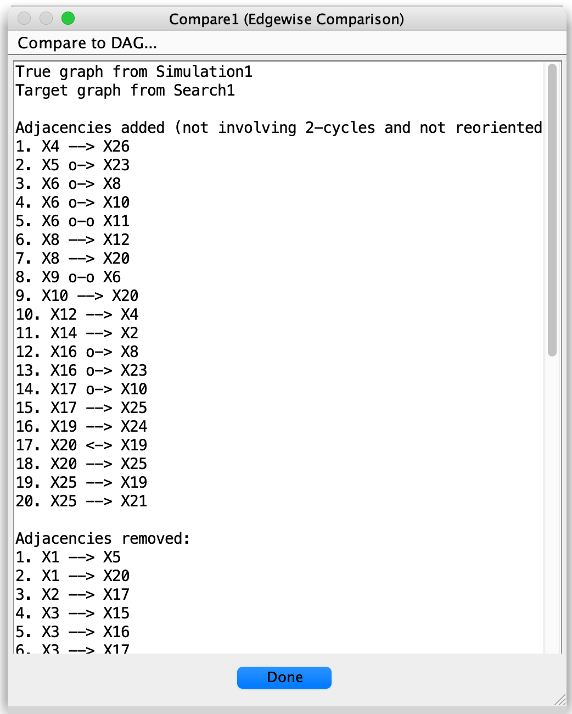You may choose (by a menu in the upper left part of the box) whether the graph being compared is the original DAG, or the CPDAG of the original DAG, of the PAG of the original DAG
When the listed changes have been made to the second graph, it will be identical to the first graph.
Stats List Graph Comparisons
A stats list graph comparison tallies up and presents statistics for the differences and similarities between a true graph and a reference graph. Consider the example used in the above section; once again, we’ll let graph one be the true graph. Just as above, when the graphs are input to the tabular graph compare box, we must specify which of the graphs is the reference graph, and whether it contains latent variables. When the comparison is complete, the following window results:
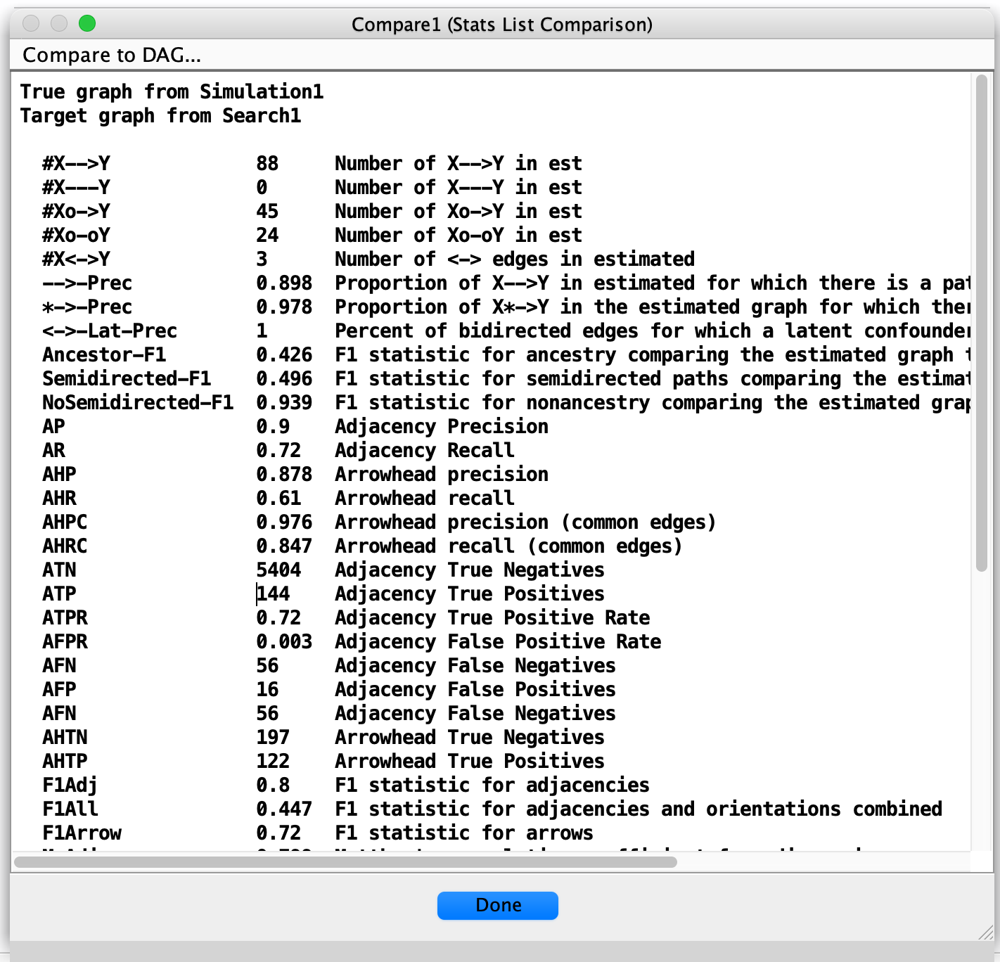You may choose (by a menu in the upper left part of the box) whether the graph being compared is the original DAG, or the CPDAG of the original DAG, of the PAG of the original DAG
The first columns gives an abbreviation for the statistic; the second columns gives a definition of the statistic. The third columns gives the statistic value.
Misclassifications
A misclassification procedure organizes a graph comparison by edge type. The edge types (undirected, directed, uncertain, partially uncertain, bidirected, and null) are listed as the rows and columns of a matrix, with the true graph edges as the row headers and the target graph edges as the column headers. If, for example, there are three pairs of variables that are connected by undirected edges in the reference graph, but are connected by directed edges in the estimated graph, then there will be a 3 in the (undirected, directed) cell of the matrix. An analogous method is used to represent endpoint errors. For example:
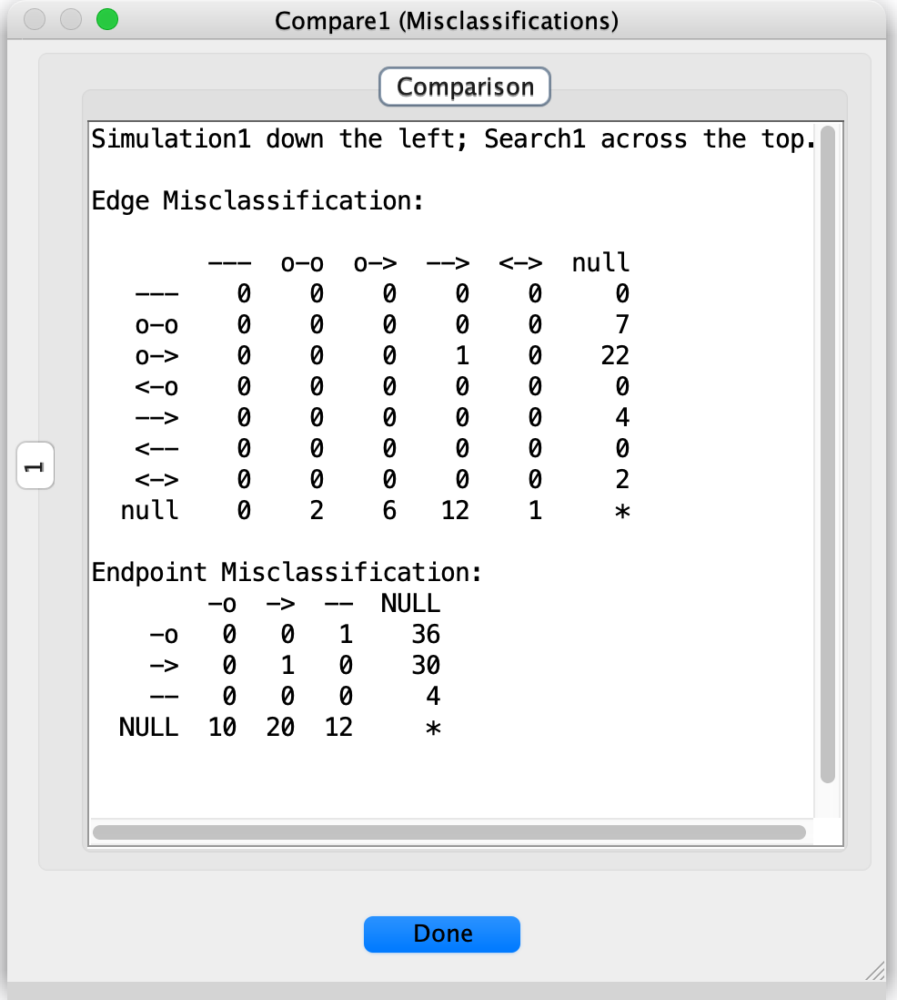Graph Intersections
A graph intersection compares two or more graphs in the same comparison. It does so by ranking adjacencies (edges without regard to direction) and orientations based on how many of the graphs they appear in. In an n-graph comparison, it first lists any adjacencies found in all n graphs. Then it lists all adjacencies found in n – 1 graphs, then adjacencies found in n – 2 graphs, and so on.
After it has listed all adjacencies, it lists any orientations that are not contradicted among the graphs, again in descending order of how many graphs the orientation appears in. An uncontradicted orientation is one on which all graphs either agree or have no opinion. So if the edge X Y appears in all n graphs, it will be listed first. If the edge X Z appears in n – 1 graphs, it will be listed next, but only if the nth graph doesn’t contradict it—that is, only if the edge Z X does not appear in the final graph. If the undirected edge Z – X appears in the final graph, the orientation X Z is still considered to be uncontradicted.
Finally, any contradicted orientations (orientations that the graphs disagree on) are listed.
Independence Facts Comparison
Rather than comparing edges or orientation, this option directly compares the implied dependencies in two graphs. When you initially open the box, you will see the following window:
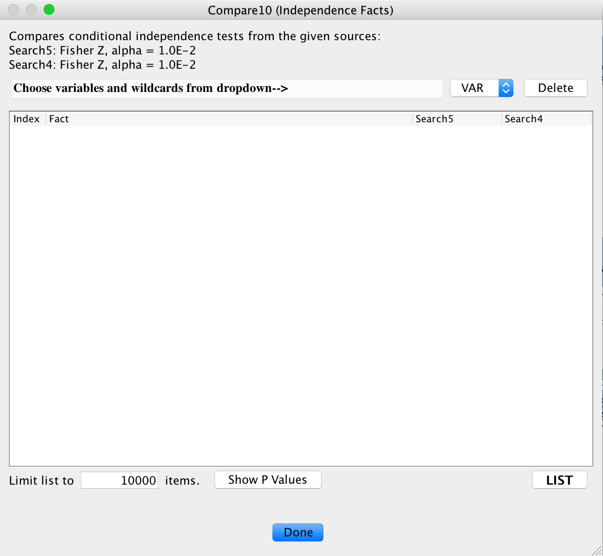The drop-down menu allows you to choose which variables you want to check the dependence of. If you select more than two variables, any subsequent variables will be considered members of the conditioning set. So, if you select variables X1, X2, and X3, in that order, the box will determine whether X1 is independent of X2, conditional on X3, in each of the graphs being compared. When you click “List,” in the bottom right of the window, the results will be displayed in the center of the window:
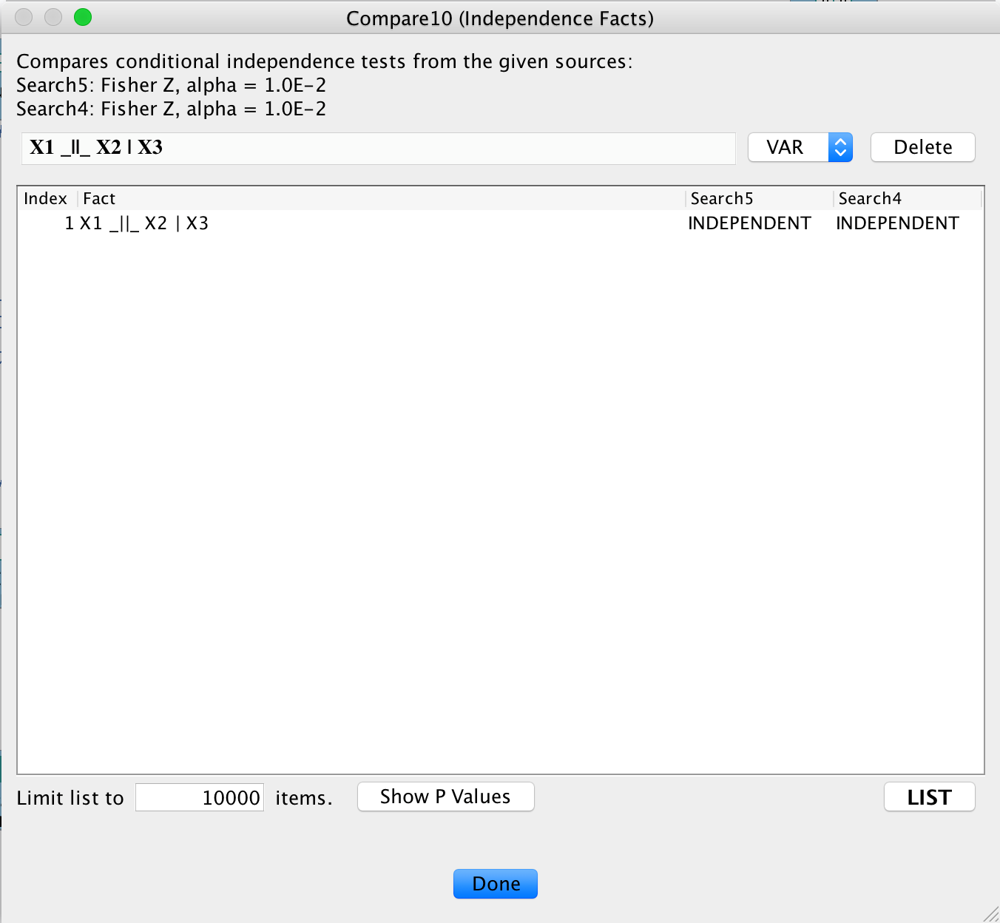Edge Weight Similarity Comparisons
Edge weight (linear coefficient) similarity comparisons compare two linear SEM instantiated models. The output is a score equal to the sum of the squares of the differences between each corresponding edge weight in each model. Therefore, the lower the score, the more similar the two graphs are. The score has peculiarities: it does not take account of the variances of the variables, and may therefore best be used with standardized models; the complete absence of an edge is scored as 0—so a negative coefficient compares less well with a positive coefficient than does no edge at all.
Consider, for example, an edge weight similarity comparison between the following two SEM IMs:
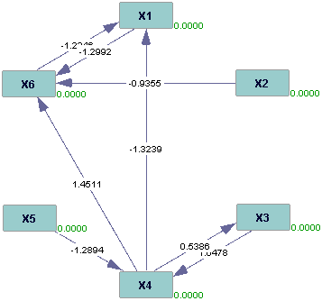 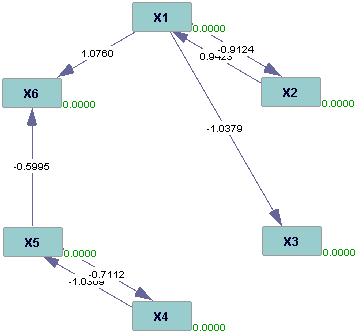When they are input into an edge weight similarity comparison, the following window results:
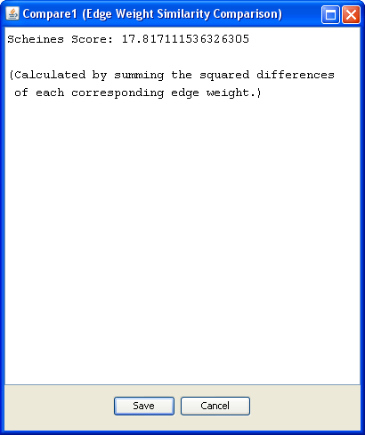This is, unsurprisingly, a high score; the input models have few adjacencies in common, let alone similar parameters.
Model Fit
A model fit comparison takes a simulation box and a search box (ideally, a search that has been run on the simulated data in the simulation box), and provides goodness-of-fit statistics, including a Student’s t statistic and p value for each edge, for the output graph and the data, as well as estimating the values of any parameters. It looks and functions identically to the estimator box, but unlike the estimator box, it takes the search box directly as a parent, without needing to isolate and parameterize the graph output by the search.
Markov Check
The Markov Checker checks to see whether the Markov Condition is satisfied for a given graph. A simple version of the Markov Condition states that for any variable X, X is independent of all non-descendants of X given X’s parents. The Markov Checker will output all such implied independences and their p-values; these p-values should be distributed as U(0, 1) if the Markov Condition is satisfied, so violations can often be detected by plotting a histogram of these p-values or doing an Anderson-Darling test or a Kolmogorov-Smirnov test to see if the hypothesis that they are drawn from a U(0, 1) distribution can be rejected. This sort of check is actually more general, since graphical implicaitons of separation are not limited to directect acyclic graphs (DAGs) but can be inferred from many types of graphs, including CPDAGs, MAGs, ADMGs, and PAGs.
Instructions for using the Markov Checker are included in the box itself, in the "Help" tab.
IDA Check
The IDA Checker check loops through all pairs of variable (X, Y) and calculates the IDA minimum effect for each X on Y, for a linear CPDAG model. The IDA minimum effect is the minimum effect of X on Y, regressing Y on S U {X} for all possible parent sets of X in the CPDAG. This gives a range of effects, and one then see whether the true effect of X on Y (as calculated from the true SEM IM) falls within this range. If it does not, then the IDA minimum effect is not consistent with the true effect.
The IDA check table gives information to help the user assess these results along with several summary statistics. Further instructions for using the IDA Checker are included in the box itself, in the "Help" tab.
Algcomparison
The Algcomparison (Algorithm comparison) tool allows the user to compare the results of multiple searches. The user can select one or more simulations, one or more algorithm (with selected test and/or score), and one or more table columns representing columns of parameter values or else statistics that are calculated based on the comparisons done. For most of these values, the use can specify multiple options for values, and the tool will iterate over all sensible combinations of these values and output a table of results. Full results, including all simulated dataset, all true graphs, all estimated graphs, and all timing results, are saved to the hard drive.
Further instructions for using the Algcomparison tool are included in the box itself, in the "Help" tab.
Parametric Model Box
The parametric model box takes a nonparameterized input graph and creates a causal model.
Possible Parent Boxes of the Parametric Model Box:
- A graph box
- Another parametric model box
- An instantiated model box
- An estimator box
- A data box
- A simulation box
- A search box
- A regression box
Possible Child Boxes of the Parametric Model Box:
- A graph box
- Another parametric model box
- An instantiated model box
- An estimator box
- A data box
- A simulation box
- A search box
- A knowledge box
Bayes Parametric Models
A Bayes parametric model takes as input a DAG. Bayes PMs represent causal structures in which all the variables are categorical.
Bayes PMs consist of three components: the graphical representation of the causal structure of the model; for each named variable, the number of categories which that variable can assume; and the names of the categories associated with each variable.
You may either manually assign categories to the variables or have Tetrad assign them at random. If you choose to manually create a Bayes PM, each variable will initially be assigned two categories, named numerically. If you choose to have Tetrad assign the categories, you can specify a minimum and maximum number of categories possible for any given variable. You can then manually edit the number of categories and category names.
Take, for example, the following DAG:
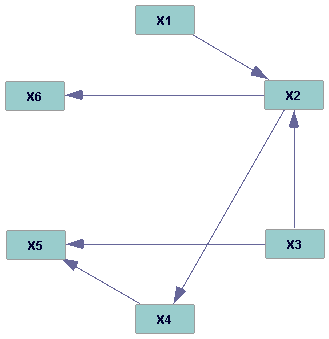One possible random Bayes PM that Tetrad might generate from the above DAG, using the default settings, looks like this:
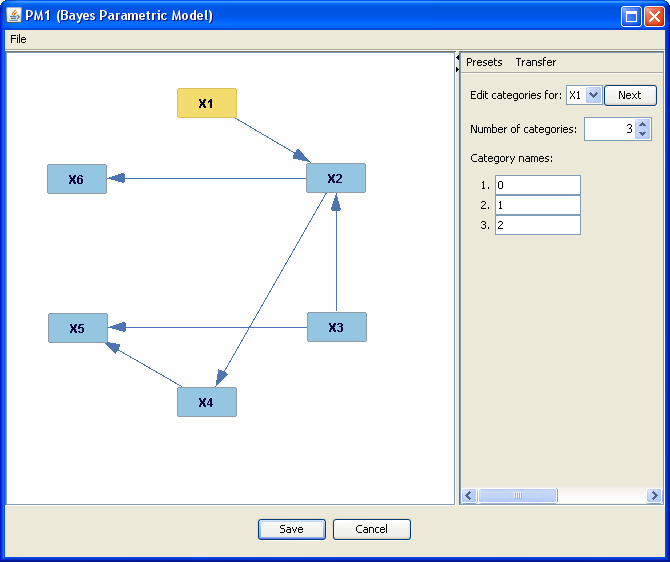To view the number and names of the categories associated with each variable, you can click on that variable in the graph, or choose it from the drop-down menu on the right. In this graph, X1 and X2 each have three categories, and the rest of the variables have four categories. The categories are named numerically by default.
The number of categories associated with a particular variable can be changed by clicking up or down in the drop-down menu on the right. Names of categories can be changed by overwriting the text already present.
Additionally, several commonly-used preset variable names are provided under the “Presets” tab on the right. If you choose one of these configurations, the number of categories associated with the current variable will automatically be changed to agree with the configuration you have chosen. If you want all the categories associated with a variable to have the same name with a number appended (e.g., x1, x2, x3), choose the “x1, x2, x3…” option under Presets.
You can also copy category names between variables in the same Bayes PM by clicking on “Transfer—Copy categories” and “Transfer—Paste categories.”
SEM Parametric Models
The parametric model of a structural equation model (SEM) will take any type of graph as input, as long as the graph contains only directed and bidirected edges. SEM PMs represent causal structures in which all variables are continuous.
A SEM PM has two components: the graphical causal structure of the model, and a list of parameters used in a set of linear equations that define the causal relationships in the model. Each variable in a SEM PM is a linear function of a subset of the other variables and of an error term drawn from a Normal distribution.
Here is an example of a SEM graph and the SEM PM that Tetrad creates from it:
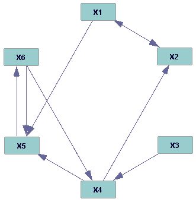 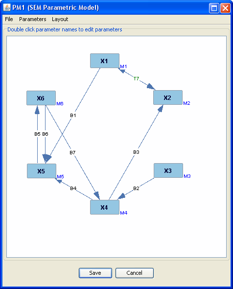You can see the error terms in the model by clicking “Parameters—Show Error Terms.” In a SEM model, a bidirected edge indicates that error terms are correlated, so when error terms are visible, the edge between X1 and X2 will instead run between their error terms.
To change a parameter’s name or starting value for estimation, double-click on the parameter in the window.
Generalized SEM Parametric Models
A generalized SEM parametric model takes as input any type of graph, as long as the graph contains only directed edges. (The generalized SEM PM cannot currently interpret bidirected edges.) Like a SEM PM, it represents causal structures in which all variables are continuous. Also like a SEM PM, a generalized SEM PM contains two components: the graphical causal structure of the model, and a set of equations representing the causal structure of the model. Each variable in a generalized SEM PM is a function of a subset of the other variables and an error term. By default, the functions are linear and the error terms are drawn from a Normal distribution (as in a SEM PM), but the purpose of a generalized SEM PM is to allow editing of these features.
Here is an example of a general graph and the default generalized SEM PM Tetrad creates using it:
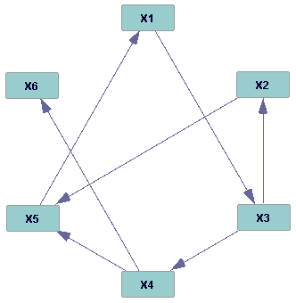 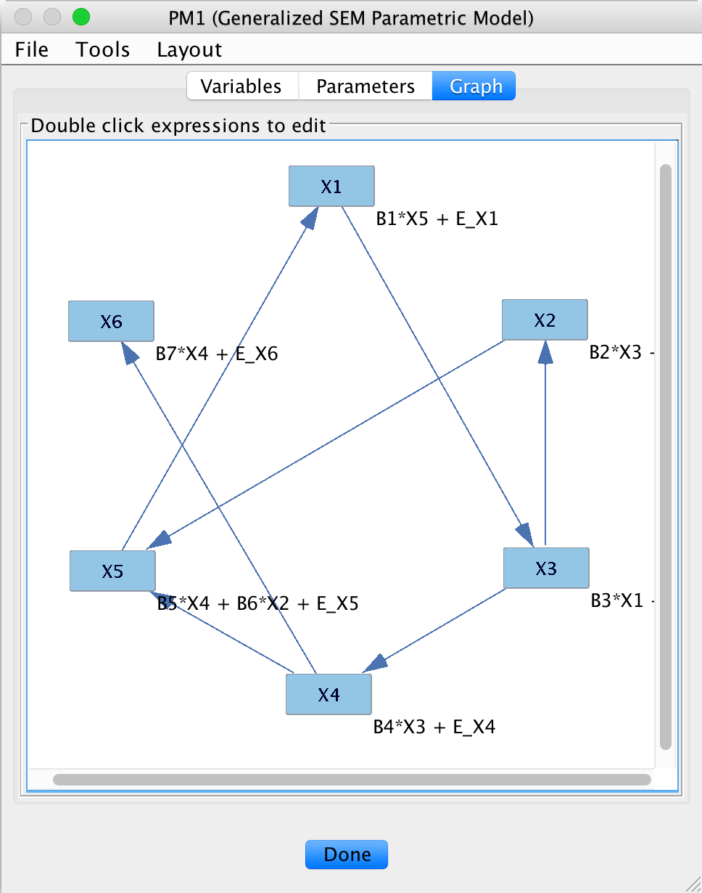You can view the error terms by clicking “Tools: Show Error Terms.”
The Variables tab contains a list of the variables and the expressions that define them, and a list of the error terms and the distributions from which their values will be drawn. Values will be drawn independently for each case if the model is instantiated (see IM box) and used to simulate data (see data box).
The Parameters tab contains a list of the parameters and the distributions from which they are drawn. When the model in instantiated in the IM box, a fixed value of each parameter will be selected according to the specified distribution.
To edit an expression or parameter, double-click on it (in any tab). This will open up a window allowing you to change the function that defines the variable or distribution of the parameter.
For instance, if you double-click on the expression next to X1 (b1*X5+E_X1), the following window opens:
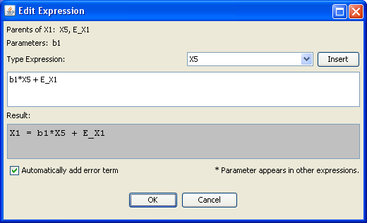The drop-down menu at the top of the window lists valid operators and functions. You could, for example, change the expression from linear to quadratic by replacing b1*X5+E_X1 with b1*X5^2+E_X1. You can also form more complicated expressions, using, for instance, exponential or sine functions. If the expression you type is well-formed, it will appear in black text; if it is invalid, it will appear in red text. Tetrad will not accept any invalid changes.
Parameters are edited in the same way as expressions.
If you want several expressions or parameters to follow the same non-linear model, you may wish to use the Apply Templates tool. This allows you to edit the expressions or parameters associated with several variables at the same time. To use the Apply Templates tool, click “Tools: Apply Templates….” This will open the following window:
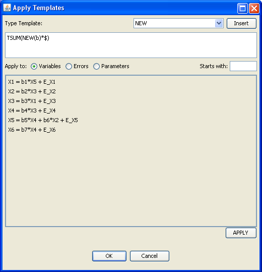You can choose to edit variables, error terms, or parameters by clicking through the “apply to” radio buttons. If you type a letter or expression into the “starts with” box, the template you create will apply only to variables, error terms, or parameters which begin with that letter for expression. For example, in the given generalized PM, there are two types of parameters: the standard deviations s1-s6 and the edge weights b1-b7. If you click on the “Parameters” radio button and type “b” into the “Starts with” box, only parameters b1-b7 will be affected by the changes you make.
The “Type Template” box itself works in the same way that the “Type Expression” box works in the “Edit Expression” window, with a few additions. If you scroll through the drop-down menu at the top of the window, you will see the options NEW, TSUM, and TPROD. Adding NEW to a template creates a new parameter for every variable the template is applied to. TSUM means “sum of the values of this variable’s parents,” and TPROD means “product of the values of this variable’s parents.” The contents of the parentheses following TSUM and TPROD indicate any operations which should be performed upon each variable in the sum or product, with the dollar sign ($) functioning as a wild card. For example, in the image above, TSUM(NEW(b)*$) means that, for each parent variable of the variable in question, a new “b” will be created and multiplied by the parent variable’s value, and then all the products will be added together.
Instantiated Model Box
The instantiated model (IM) box takes a parametric model and assigns values to the parameters.
Possible Parent Boxes of the Instantiated Model Box:
- A parametric model box
- Another instantiated model box
- An estimator box
- A simulation box
- An updater box
Possible Child Boxes of the Instantiated Model Box:
- A graph box
- A compare box
- A parametric model box
- Another instantiated model box
- An estimator box
- A simulation box
- A search box
- An updater box
- A classify box
- A knowledge box
Bayes Instantiated Models
A Bayes IM consists of a Bayes parametric model with defined probability values for all variables. This means that, conditional on the values of each of its parent variables, there is a defined probability that a variable will take on each of its possible values. For each assignment of a value to each of the parents of a variable X, the probabilities of the several values of X must sum to 1.
You can manually set the probability values for each variable, or have Tetrad assign them randomly. If you choose to have Tetrad assign probability values, you can manually edit them later.
Here is an example of a Bayes PM and its randomly created instantiated model:
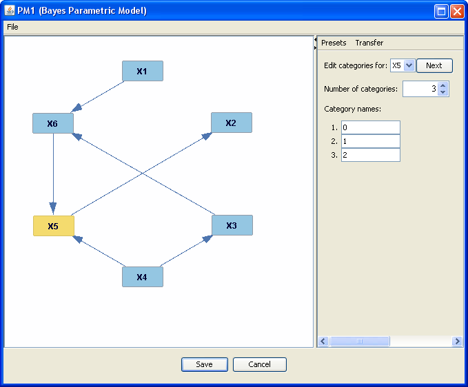 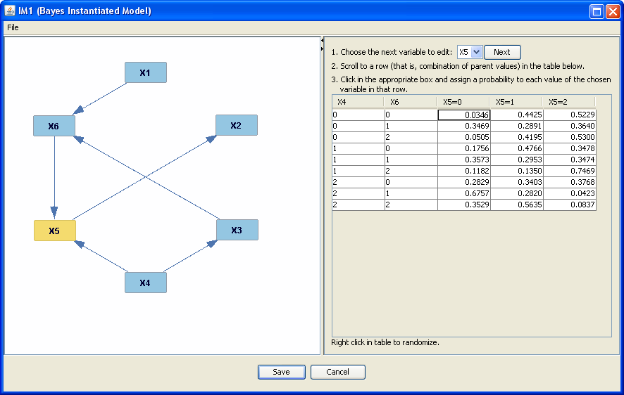In the model above, when X4 and X5 are both 0, the probability that X5 is 0 is 0.0346, that X5 is 1 is 0.4425, and that X5 is 2 is 0.5229. Since X5 must be 0, 1, or 2, those three values must add up to one, as must the values in every row.
To view the probability values of a variable, either double click on the variable in the graph or choose it from the drop-down menu on the right. You can manually set a given probability value by overwriting the text box. Be warned that changing the value in one cell will delete the values in all the other cells in the row. Since the values in any row must sum to one, if all the cells in a row but one are set, Tetrad will automatically change the value in the last cell to make the sum correct. For instance, in the above model, if you change the first row such that the probability that X5 = 0 is 0.5000 and the probability that X5 = 1 is 0.4000, the probability that X5 = 2 will automatically be set to 0.1000.
If you right-click on a cell in the table (or two-finger click on Macs), you can choose to randomize the probabilities in the row containing that cell, randomize the values in all incomplete rows in the table, randomize the entire table, or randomize the table of every variable in the model. You can also choose to clear the row or table.
Dirichlet Instantiated Models
A Dirichlet instantiated model is a specialized form of a Bayes instantiated model. Like a Bayes IM, a Dirichlet IM consists of a Bayes parametric model with defined probability values. Unlike a Bayes IM, these probability values are not manually set or assigned randomly. Instead, the pseudocount is manually set or assigned uniformly, and the probability values are derived from it. The pseudocount of a given value of a variable is the number of data points for which the variable takes on that value, conditional on the values of the variable’s parents, where these numbers are permitted to take on non-negative real values. Since we are creating models without data, we can set the pseudocount to be any number we want. If you choose to create a Dirichlet IM, a window will open allowing you to either manually set the pseudocounts, or have Tetrad set all the pseudocounts in the model to one number, which you specify.
Here is an example of a Bayes PM and the Dirichlet IM which Tetrad creates from it when all pseudocounts are set to one:
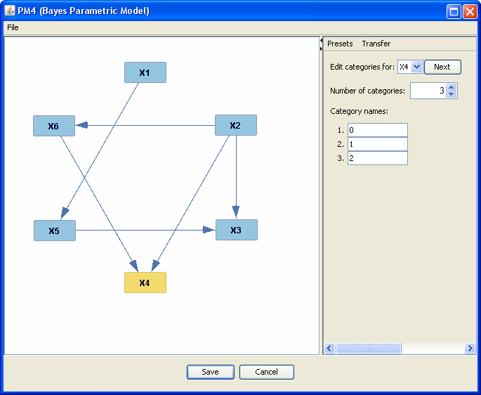 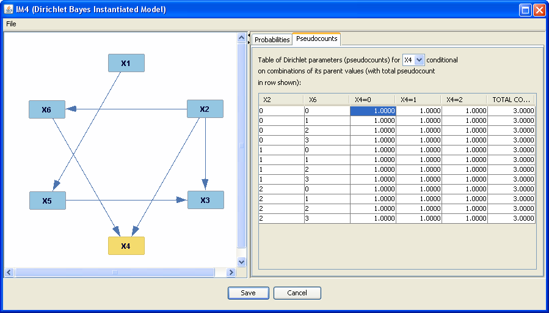In the above model, when X2=0 and X6=0, there is one (pseudo) data point at which X4=0, one at which X4=1, and one at which X4=2. There are three total (pseudo) data points in which X2=0 and X6=0. You can view the pseudocounts of any variable by clicking on it in the graph or choosing it from the drop-down menu at the top of the window. To edit the value of a pseudocount, double-click on it and overwrite it. The total count of a row cannot be directly edited.
From the pseudocounts, Tetrad determines the conditional probability of a category. This estimation is done by taking the pseudocount of a category and dividing it by the total count for its row. For instance, the total count of X4 when X2=0 and X6=0 is 3. So the conditional probability of X4=0 given that X2=0 and X6=0 is 1/3. The reasoning behind this is clear: in a third of the data points in which X2 and X6 are both 0, X4 is also 0, so the probability that X4=0 given that X2 and X6 also equal 0 is probably one third. This also guarantees that the conditional probabilities for any configuration of parent variables add up to one, which is necessary.
To view the table of conditional probabilities for a variable, click the Probabilities tab. In the above model, the Probabilities tab looks like this:
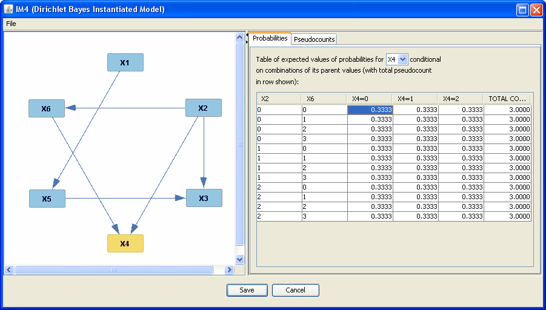SEM Instantiated Models
A SEM instantiated model is a SEM parametric model in which the parameters and error terms have defined values. It assumes that relationships between variables are linear, and that error terms have Gaussian distributions. If you choose to create a SEM IM, the following window will open:
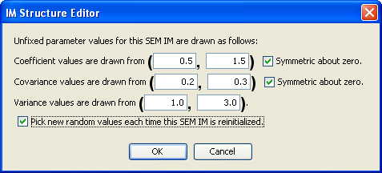Using this box, you can specify the ranges of values from which you want coefficients, covariances, and variances to be drawn for the parameters in the model. In the above box, for example, all linear coefficients will be between -1.0 and 1.0. If you uncheck “symmetric about zero,” they will only be between 0.0 and 1.0.
Here is an example of a SEM PM and a SEM IM generated from it using the default settings:
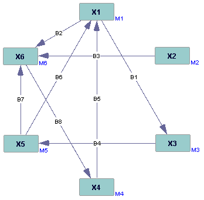 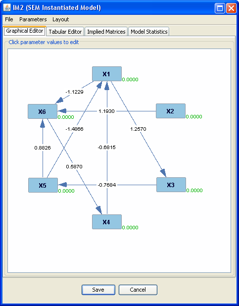You can now manually edit the values of parameters in one of two ways. Double-clicking on the parameter in the graph will open up a small text box for you to overwrite. Or you can click on the Tabular Editor tab, which will show all the parameters in a table which you can edit. The Tabular Editor tab of our SEM IM looks like this:
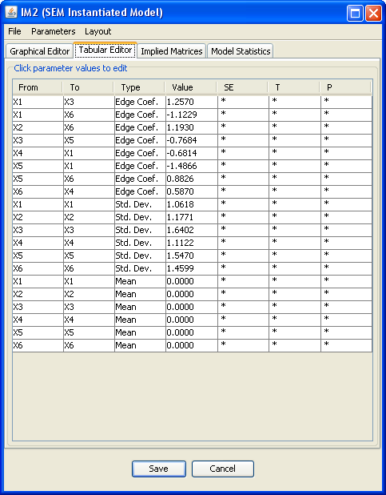In the Tabular Editor tab of a SEM estimator box (which functions similarly to the SEM IM box), the SE, T, and P columns provide statistics showing how robust the estimation of each parameter is. Our SEM IM, however, is in an instantiated model box, so these columns are empty.
The Implied Matrices tab shows matrices of relationships between variables in the model. In the Implied Matrices tab, you can view the covariance or correlation matrix for all variables (including latents) or just measured variables. In our SEM IM, the Implied Matrices tab looks like this:
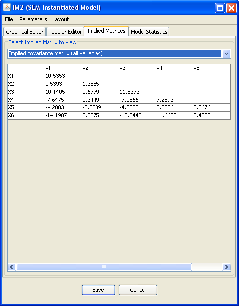You can choose the matrix you wish to view from the drop-down menu at the top of the window. Only half of any matrix is shown, because in a well-formed acyclic model, the matrices should be symmetric. The cells in the Implied Matrices tab cannot be edited.
In an estimator box, the Model Statistics tab provides goodness of fit statistics for the SEM IM which has been estimated. Our SEM IM, however, is in an instantiated model box, so no estimation has occurred, and the Model Statistics tab is empty.
Standardized SEM Instantiated Models
A standardized SEM instantiated model consists of a SEM parametric model with defined values for its parameters. In a standardized SEM IM, each variable (not error terms) has a Normal distribution with 0 mean and unit variance. The input PM to a standardized SEM IM must be acyclic.
Here is an example of an acyclic SEM PM and the standardized SEM IM which Tetrad creates from it
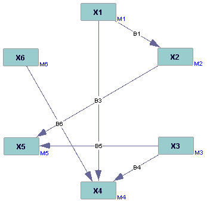 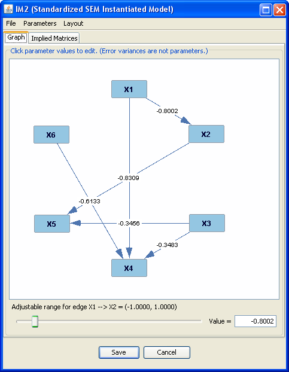To edit a parameter, double-click on it. A slider will open at the bottom of the window (shown above for the edge parameter between X1 and X2). Click and drag the slider to change the value of the parameter, or enter the specific value you wish into the box. The value must stay within a certain range in order for the variables in the model to remain standard Normal (N(0, 1)), so if you attempt to overwrite the text box on the bottom right with a value outside the listed range, Tetrad will not allow it. That is, given that the variables are all distributed as N(0, 1), there is a limited range in which each parameter may be adjusted; these ranges vary parameter by parameter, given the values of the other parameters. In a standardized SEM IM, error terms are not considered parameters and cannot be edited, but you can view them by clicking Parameters: Show Error Terms.
It is possible to make a SEM IM with a time lag graph, even with latent variables. This does not work for other types of models, such as Bayes IMs or for mixed data (for which no IM is currently available-- though mixed data can be simulated in the Simulate box with an appropriate choice of simulation model). Standardization for time lag model is not currently available.
The Implied Matrices tab works in the same way that it does in a normal SEM IM.
Generalized SEM Instantiated Models
A generalized SEM instantiated model consists of a generalized SEM parametric model with defined values for its parameters. Since the distributions of the parameters were specified in the SEM PM, Tetrad does not give you the option of specifying these before it creates the instantiated model.
Here is an example of a generalized SEM PM and its generalized SEM IM:
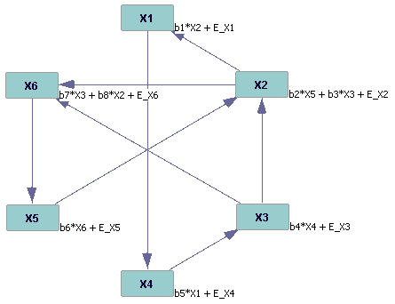 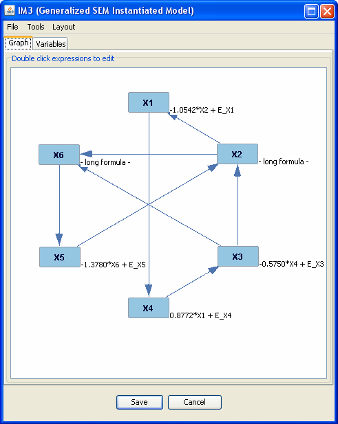Note that the expressions for X6 and X2 are not shown, having been replaced with the words “long formula.” Formulae over a certain length—the default setting is 25 characters—are hidden to improve visibility. Long formulae can be viewed in the Variables tab, which lists all variables and their formulae. You can change the cutoff point for long formulae by clicking Tools: Formula Cutoff.
If you double-click on a formula in either the graph or the Variables tab, you can change the value of the parameters in that formula.
Data Box
The data box stores or manipulates data sets.
Possible Parent Boxes of the Data Box
- A graph box
- An estimator box
- Another data box
- A simulation box
- A regression box
Possible Child Boxes of the Data Box
- A graph box
- A parametric model box
- Another data box
- An estimator box
- A simulation box
- A search box
- A classify box
- A regression box
- A knowledge box
Using the Data Box:
The data box stores the actual data sets from which causal structures are determined. Data can be loaded into the data box from a preexisting source, manually filled in Tetrad, or simulated from an instantiated model.
Loading Data
Data sets loaded into Tetrad may be categorical, continuous, mixed, or covariance data.
General Tabular Data
To load data, create a data box with no parent. When you double-click it, an empty data window will appear:
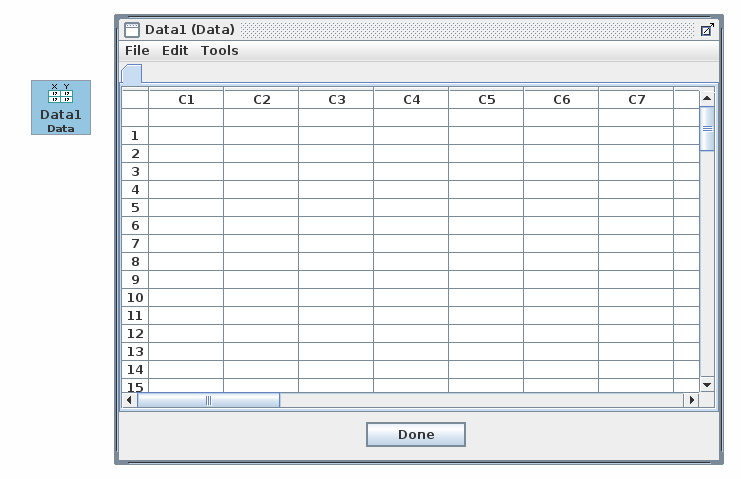Click "File -> Load Data" and select the text file or files that contain your data. The following window will appear:

The text of the source file appears in the Data Preview window. Above, there are options to describe your file, so that Tetrad can load it correctly. If you are loading categorical, continuous, or mixed data values, select the “Tabular Data” button. If you are loading a covariance matrix, select “Covariance Data.” Note that if you are loading a covariance matrix, your text file should contain only the lower half of the matrix, as Tetrad will not accept an entire matrix.
Below the file type, you can specify a number of other details about your file, including information about the type of data (categorical/continuous/mixed), metadata JSON file, delimiter between data values, variable names, and more. If your data is mixed (some variables categorical, and some continuous), you must specify the maximum number of categories discrete variables in your data can take on. All columns with more than that number of values will be treated as continuous; the others will be treated as categorical. If you do not list the variable names in the file, you should uncheck “First row variable names.” If you provide case IDs, check the box for the appropriate column in the “Case ID column to ignore” area. If the case ID column is labeled, provide the name of the label; otherwise, the case ID column should be the first column, and you should check “First column.”
Below this, you can specify your comment markers, quote characters, and the character which marks missing data values. Tetrad will use that information to distinguish continuous from discrete variables. You may also choose more files to load (or remove files that you do not wish to load) in the “Files” panel on the lower left.
Metadata JSON File
Metadata is optional in general data handling. But it can be very helpful if you want to overwrite the data type of given variable column. And the metadata MUST be a JSON file like the following example.
{
"domains": [
{
"name": "raf",
"discrete": false
},
{
"name": "mek",
"discrete": true
}
]
}
You can specify the name and data type for each variable. Variables that are not in the metadata file will be treated as domain variables and their data type will be the default data type when reading in columns described previously.
When you are satisfied with your description of your data, click “Validate” at the bottom of the window. Tetrad will check that your file is correctly formatted. If it is, you will receive a screen telling you that validation has passed with no error. At this point, you can revisit the settings page, or click “Load” to load the data.
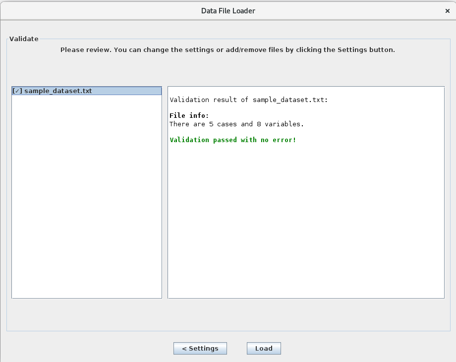 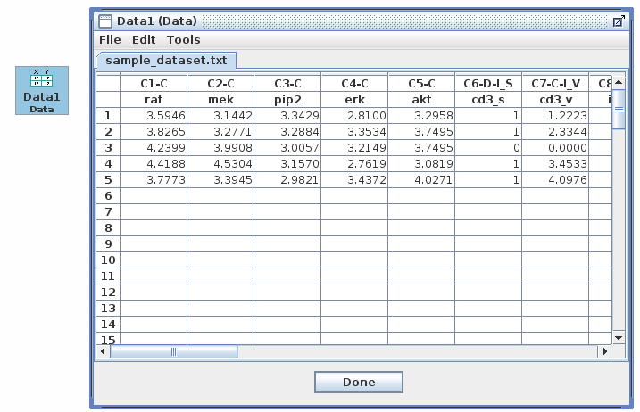You can now save this data set to a text file by clicking File: Save Data.
In addition to loading data from a file, you can manually enter data values and variable names by overwriting cells in the data table.
Covariance Data
Covariance matrices loaded into Tetrad should be ascii text files. The first row contains the sample size, the second row contains the names of the variables. The first two rows are followed by a lower triangular matrix. For example:
1000 X1 X2 X3 X4 X5 X6 1.0000 0.0312 1.0000 -0.5746 0.4168 1.0000 -0.5996 0.4261 0.9544 1.0000 0.8691 0.0414 -0.4372 -0.4487 1.0000 0.6188 0.0427 -0.1023 -0.0913 0.7172 1.0000
Categorical, continuous, or mixed data should also be an ascii text file, with columns representing variables and rows representing cases. Beyond that, there is a great deal of flexibility in the layout: delimiters may be commas, colons, tabs, spaces, semicolons, pipe symbols, or whitespace; comments and missing data may be marked by any symbol you like; there may be a row of variable names or not; and case IDs may be present or not. There should be no sample size row. For example:
X1 X2 X3 X4 X5
-3.0133 1.0361 0.2329 2.7829 -0.2878
0.5542 0.3661 0.2480 1.6881 0.0775
3.5579 -0.7431 -0.5960 -2.5502 1.5641
-0.0858 1.0400 -0.8255 0.3021 0.2654
-0.9666 -0.5873 -0.6350 -0.1248 1.1684
-1.7821 1.8063 -0.9814 1.8505 -0.7537
-0.8162 -0.6715 0.3339 2.6631 0.9014
-0.3150 -0.5103 -2.2830 -1.2462 -1.2765
-4.1204 2.9980 -0.3609 4.8079 0.6005
1.4658 -1.4069 1.7234 -1.7129 -3.8298
Handling Tabular Data with Interventional Variables
This is an advanced topic for datasets that contain interventional (i.e., experimental) variables. We model a single intervention using two variables: status variable and value variable. Below is a sample dataset, in which `raf`, `mek`, `pip2`, `erk`, `atk` are the 5 domain variables, and `cd3_s` and `cd3_v` are an interventional pair (status and value variable respectively). `icam` in another intervention variable, but it's a combined variable that doesn't have status.
raf mek pip2 erk akt cd3_s cd3_v icam 3.5946 3.1442 3.3429 2.81 3.2958 0 1.2223 * 3.8265 3.2771 3.2884 3.3534 3.7495 0 2.3344 * 4.2399 3.9908 3.0057 3.2149 3.7495 1 0 3.4423 4.4188 4.5304 3.157 2.7619 3.0819 1 3.4533 1.0067 3.7773 3.3945 2.9821 3.4372 4.0271 0 4.0976 *
And the sample metadata JSON file looks like this:
{
"interventions": [
{
"status": {
"name": "cd3_s",
"discrete": true
},
"value": {
"name": "cd3_v",
"discrete": false
}
},
{
"status": null,
"value": {
"name": "icam",
"discrete": false
}
}
],
"domains": [
{
"name": "raf",
"discrete": false
},
{
"name": "mek",
"discrete": false
}
]
}
Each intervention consists of a status variable and value variable. There are cases that you may have a combined interventional variable that doesn't have the status variable. In this case, just use `null`. The data type of each variable can either be discrete or continuous. We use a boolean flag to indicate the data type. From the above example, we only specified two domain variables in the metadata JSON, any variables not specified in the metadata will be treated as domain variables.
Manipulating Data
The data box can also be used to manipulate data sets that have already been loaded or simulated. If you create a data box as the child of another box containing a data set, you will be presented with a list of operations that can be performed on the data. The available data manipulations are:
Discretize Dataset
This operation allows you to make some or all variables in a data set discrete. If you choose it, a window will open.

When the window first opens, no variables are selected, and the right side of the window appears blank; in this case, we have already selected X1 ourselves. In order to discretize a variable, Tetrad assigns all data points within a certain range to a category. You can tell Tetrad to break the range of the dataset into approximately even sections (Evenly Distributed Intervals) or to break the data points themselves into approximately even chunks (Evenly Distributed Values). Use the scrolling menu to increase or decrease the number of categories to create. You can also rename categories by overwriting the text boxes on the left, or change the ranges of the categories by overwriting the text boxes on the right. To discretize another variable, simply select it from the left. If you want your new data set to include the variables you did not discretize, check the box at the bottom of the window.
You may discretize multiple variables at once by selecting multiple variables. In this case, the ranges are not shown, as they will be different from variable to variable.
Convert Numerical Discrete to Continuous
If you choose this option, any discrete variables with numerical category values will be treated as continuous variables with real values. For example, “1” will be converted to “1.0.”
Calculator
The Calculator option allows you to add and edit relationships between variables in your data set, and to add new variables to the data set.
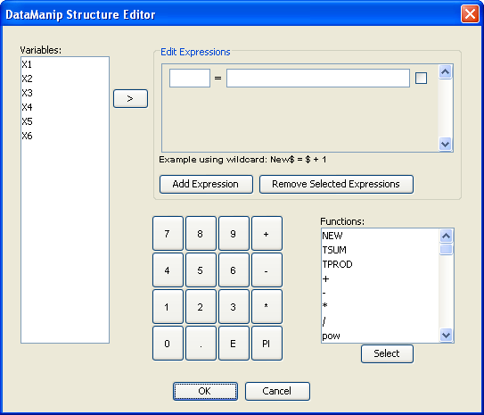In many ways, this tool works like the Edit Expression window in a generalized SEM parametric model. To edit the formula that defines a variable (which will change that variable’s values in the table) type that variable name into the text box to the left of the equals sign. To create a new variable, type a name for that variable into the text box to the left of the equals sign. Then, in the box on the right, write the formula by which you wish to define a new variable in place of, or in addition to, the old variable. You can select functions from the scrolling menu below. (For an explanation of the meaning of some the functions, see the section on generalized SEM models in the Parametric Model Box chapter.) To edit or create several formulae at once, click the “Add Expression” button, and another blank formula will appear. To delete a formula, check the box next to it and click the “Remove Selected Expressions” button.
When you click “Save” a table will appear listing the data. Values of variables whose formulae you changed will be changed, and any new variables you created will appear with defined values.
Merge Deterministic Interventional Variables
This option looks for pairs of interventional variables (currently only discrete variables) that are deterministic and merges them into one combined variable. For domain variables that are fully determined, we'll add an attribute to them. Later in the knowledge box (Edges and Tiers), all the interventional variables (both status and value variables) and the fully-determined domain variables will be automatically put to top tier. And all other domain variables will be placed in the second tier.
Merge Datasets
This operation takes two or more data boxes as parents and creates a data box containing all data sets in the parent boxes. Individual data sets will be contained in their own tabs in the resulting box.
Convert to Correlation Matrix
This operation takes a tabular data set and outputs the lower half of the correlation matrix of that data set.
Convert to Covariance Matrix
This operation takes a tabular data set and outputs the lower half of the covariance matrix of that data set.
Inverse Matrix
This operation takes a covariance or correlation matrix and outputs its inverse. (Note: The output will not be acceptable in Tetrad as a covariance or correlation matrix, as it is not lower triangular.)
Simulate Tabular from Covariance
This operation takes a covariance matrix and outputs a tabular data set whose covariances comply with the matrix.
Difference of Covariance Matrices
This operation takes two covariance matrices and outputs their difference. The resulting matrix will be a well-formatted Tetrad covariance matrix data set.
Sum of Covariance Matrices
This operation takes two covariance matrices and outputs their sum. The resulting matrix will be a well-formatted Tetrad covariance matrix data set.
Average of Covariance Matrices
This operation takes two or more covariance matrices and outputs their average. The resulting matrix will be a well-formatted Tetrad covariance matrix data set.
Convert to Time Lag Data
This operation takes a tabular data set and outputs a time lag data set, in which each variable is recorded several times over the course of an experiment. You can specify the number of lags in the data. Each contains the same data, shifted by one “time unit.” For instance, if the original data set had 1000 cases, and you specify that the time lag data set should contain two lags, then the third stage variable values will be those of cases 1 to 998, the second stage variable values will be those of cases 2 to 999, and the first stage variable values will be those of cases 3 to 1000.
Convert to Time Lag Data with Index
This operation takes a tabular data set and outputs a time lag data set in the same manner as “Convert to Time Lag Data,” then adds an index variable.
Convert to AR Residuals
This operation is performed on a time lag data set. Tetrad performs a linear regression on each variable in each lag with respect to each of the variables in the previous lag, and derives the error terms. The output data set contains only the error terms.
Whiten
Takes a continuous tabular data set and converts it to a data set whose covariance matrix is the identity matrix.
Nonparanormal Transform
Takes a continuous tabular data set and increases its Gaussianity, using a nonparanormal transformation to smooth the variables. (Note: This operation increases only marginal Gaussianity, not the joint, and in linear systems may eliminate information about higher moments that can aid in non-Gaussian orientation procedures.)
Convert to Residuals
The input for this operation is a directed acyclic graph (DAG) and a data set. Tetrad performs a linear regression on each variable in the data set with respect to all the variables that the graph shows to be its parents, and derives the error terms. The output data set contains only the error terms.
Standardize Data
This operation manipulates the data in your data set such that each variable has 0 mean and unit variance.
Remove Cases with Missing Values
If you choose this operation, Tetrad will remove any row in which one or more of the values is missing.
Replace Missing Values with Column Mode
If you choose this operation, Tetrad will replace any missing value markers with the most commonly used value in the column.
Replace Missing Values with Column Mean
If you choose this operation, Tetrad will replace any missing value markers with the average of all the values in the column. Replace Missing Values with Regression Predictions: If you choose this operation, Tetrad will perform a linear regression on the data in order to estimate the most likely value of any missing value.
Replace Missing Values by Extra Category
This operation takes as input a discrete data set. For every variable which has missing values, Tetrad will create an extra category for that variable (named by default “Missing”) and replace any missing data markers with that category.
Replace Missing with Random
For discrete data, replaces missing values at random from the list of categories the variable takes in other cases. For continuous data, finds the minimum and maximum values of the column (ignoring the missing values) and picks a random number from U(min, max)
Inject Missing Data Randomly
If you choose this operation, Tetrad will replace randomly selected data values with a missing data marker. You can set the probability with which any particular value will be replaced (that is, approximately the percentage of values for each variable which will be replaced with missing data markers).
Bootstrap Sample
This operation draws a random subset of the input data set (you specify the size of the subset) with replacement (that is, cases which appear once in the original data set can appear multiple times in the subset). The resulting data set can be used along with similar subsets to achieve more accurate estimates of parameters.
Split by Cases
This operation allows you to split a data set into several smaller data sets. When you choose it, a window opens.
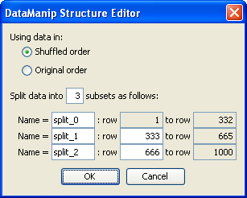If you would like the subsets to retain the ordering they had in the original set, click “Original Order.” Otherwise, the ordering of the subsets will be assigned at random. You can also increase and decrease the number of subsets created, and specify the range of each subset.
Permute Rows
This operation randomly reassigns the ordering of a data set’s cases.
First Differences
This operation takes a tabular data set and outputs the first differences of the data (i.e., if X is a variable in the original data set and X’ is its equivalent in the first differences data set, X’1 = X2 – X1). The resulting data set will have one fewer row than the original.
Concatenate Datasets
This operation takes two or more datasets and concatenates. The parent datasets must have the same number of variables.
Copy Continuous Variables
This operation takes as input a data set and creates a new data set containing only the continuous variables present in the original.
Copy Discrete Variables
This operation takes as input a data set and creates a new data set containing only the discrete variables present in the original.
Remove Selected Variables
Copy Selected Variables
As explained above, you can select an entire column in a data set by clicking on the C1, C2, C3, etc… cell above the column. To select multiple columns, press and hold the “control” key while clicking on the cells. Once you have done so, you can use the Copy Selected Variables tool to create a data set in which only those columns appear.
Remove Constant Columns
This operation takes a data set as input, and creates a data set which contains all columns in the original data set except for those with constant values (such as, for example, a column containing nothing but 2’s).
Randomly Reorder Columns
This operation randomly reassigns the ordering of a data set’s variables.
Manually Editing Data
Under the Edit tab, there are several options to manipulate data. If you select a number of cells and click “Clear Cells,” Tetrad will replace the data values in the selected cells with a missing data marker. If you select an entire row or column and click “Delete selected rows or columns,” Tetrad will delete all data values in the row or column, and the name of the row or column. (To select an entire column, click on the category number above it, labeled C1, C2, C3, and so on. To select an entire row, click on the row number to the left of it, labeled 1, 2, 3, and so on.) You can also copy, cut, and paste data values to and from selected cells. You can choose to show or hide category names, and if you click on “Set Constants Col to Missing,” then in any column in which the variable takes on only one value (for example, a column in which every cell contains the number 2) Tetrad will set every cell to the missing data marker.
Under the Tools tab, the Calculator tool allows you to add or edit relationships between variables in the graph. For more information on how the Calculator tool works, see “Manipulating Data” section above.
Data Information
Under the Tools tab, there are options to view information about your data in several formats.
The Plot Matrix tool shows a grid of scatter plots and histograms for selected variables. This may be used for continuous, discrete, or mixtures of continuous and discrete data. To select which variables to include in the rows and columns of the grid, click the variable lists to the right of the tool. To select multiple variables in these lists, use the shift or control keys when clicking; shift-click select ranges, whereas control-click will select additional single variables.
Histograms show the data distribution for a variable, with the width of each bar representing a range of values and the height of each bar representing how many data points fall into that range.
Scatter plots show a plot of variables taken two at a time. They plot values of one variable's values against another variable's values, point by point, and allow one to see the distribution of points for the pair of variables.
If viewing a grid of plots, one wishes to view a single plot in this grid, double-click on the desired plot, and it will be magnified so that it is in the only plot viewed. Double-click on the magnified plot to return to the grid.
The “Settings” menu contains some tools to control the output. One may add regression lines to the scatter plots or select the number of bins to include in the histograms.
Finally, one may condition on ranges of variables or particular discrete values by selecting “Edit Conditioning Variables and Ranges.” This brings up a dialog that lets one add conditioning variables with particular ranges for continuous variables or values for discrete values. For continuous ranges, one may pick “Above Average,” “Below Average,” or “In n-tile” (where n is specified) or give a particular range manually. One may add as many conditions as one prefers; when one clicks “OK,” all plots will be updated to reflect these conditioning choices.
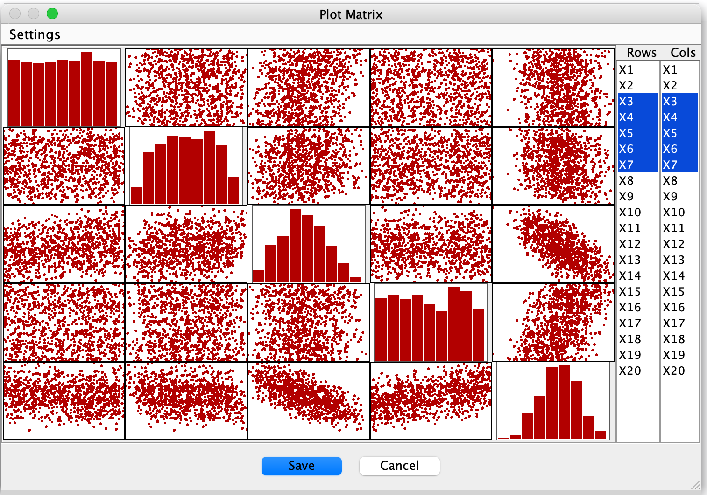 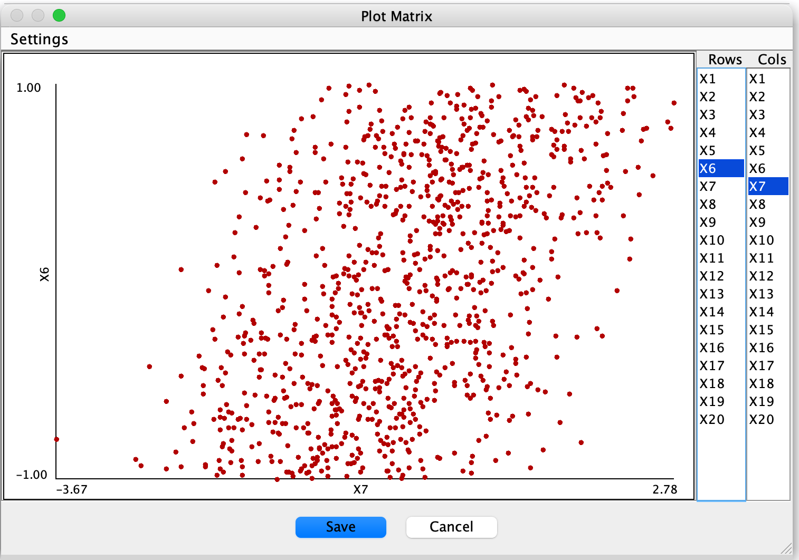The Q-Q Plot tool is a test for normality of distribution.
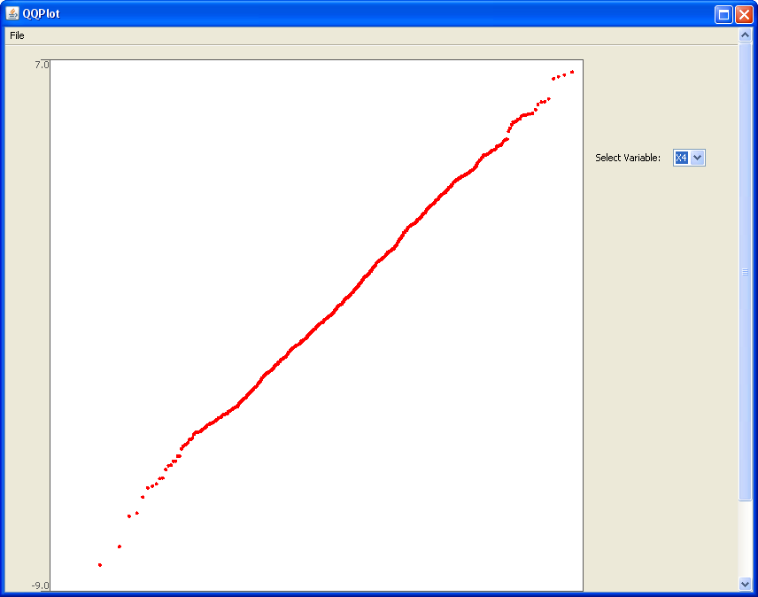If a variable has a distribution which is approximately Normal, its Q-Q plot should appear as a straight line with a positive slope. You can select the variable whose Q-Q plot you wish to view from the drop-down menu on the right.
The Normality Tests tool gives a text box with the results of the Kolmogorov and Anderson Darling Tests for normality for each variable. The Descriptive Statistics tool gives a text box with statistical information such as the mean, median, and variance of each variable.
Estimator Box
The estimator box takes as input a data box (or simulation box) and a parametric model box and estimates, tests, and outputs an instantiated model for the data. Except for the EM Bayes estimator, Tetrad estimators do not accept missing values. If your data set contains missing values, the missing values can be interpolated or removed using the data box. (Note that missing values are allowed in various Tetrad search procedures; see the section on the search box.)
Possible Parent Boxes of the Estimator Box:
- A parametric model box
Possible Child Boxes of the Estimator Box:
- A graph box
- A simulation box
- An updater box
ML Bayes Estimations
Bayes nets are acyclic graphical models parameterized by the conditional probability distribution of each variable on its parents' values, as in the instantiated model box. When the model contains no latent variables, the joint distribution of the variables equals the product of the distributions of the variables conditional on their respective parents. The maximum likelihood (ML) estimate of the joint probability distribution under a model is the product of the corresponding frequencies in the sample.
The ML Bayes estimator, because it estimates Bayes IMs, works only on models with discrete variables. The model estimated must not include latent variables, and the input data set must not include missing data values. A sample estimate looks like this:
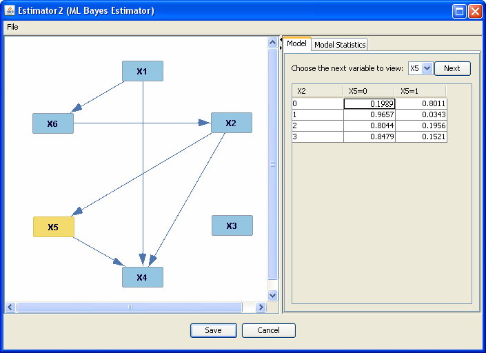The Model tab works exactly as it does in a Bayes instantiated model. The Model Statistics tab provides the p-value for a chi square test of the model, degrees of freedom, the chi square value, and the Bayes Information Criterion (BIC) score of the model. Note that BIC is calculated as 2L -
Dirichlet Estimations
A Dirichlet estimate estimates a Bayes instantiated model using a Dirichlet distribution for each category. In a Dirichlet estimate, the probability of each value of a variable (conditional on the values of the variable’s parents) is estimated by adding together a prior pseudo count (which is 1, by default, of cases and the number of cases in which the variable takes that value in the data, and then dividing by the total number of cases in the pseudocounts and in the data with that configuration of values of parent variables. The default prior pseudo-count can be changed inside the box. (For a full explanation of pseudocounts and Dirichlet estimate, see the section on Dirichlet instantiated models.)
The Dirichlet estimator in TETRAD does not work if the input data set contains missing data values.
EM Bayes Estimations
The EM Bayes estimator takes the same input and gives the same output as the ML Bayes estimator, but is designed to handle data sets with missing data values, and input models with latent variables.
SEM Estimates
A SEM estimator estimates the values of parameters for a SEM parametric model. SEM estimates do not work if the input data set contains missing data values. A sample output looks like this:
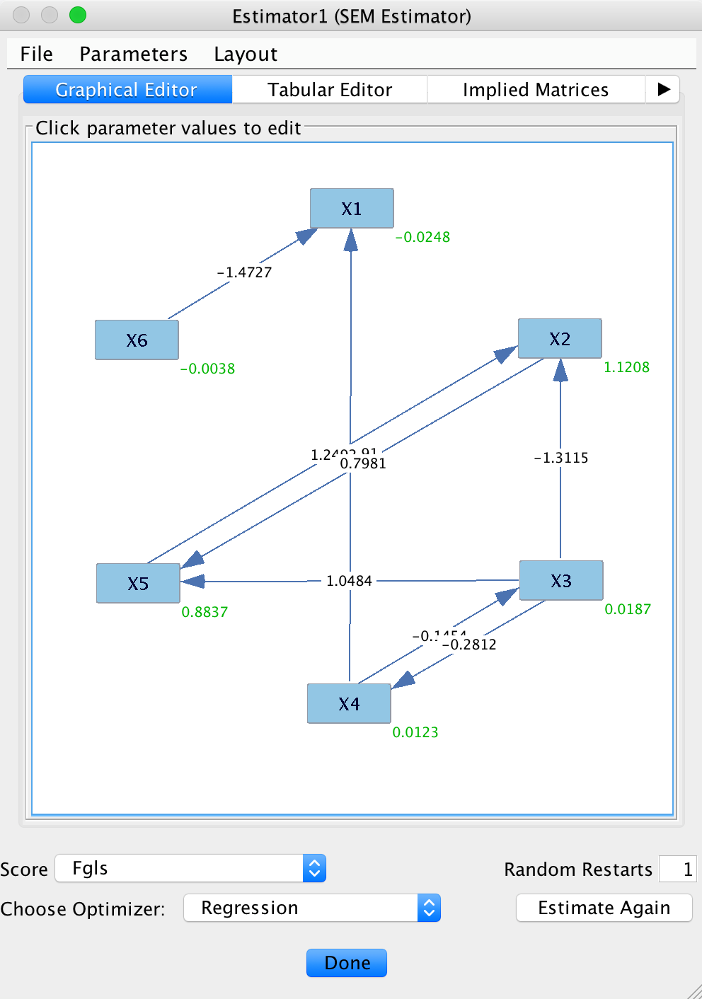Tetrad provides five parameter optimizers: RICF,( Drton, M., & Richardson, T. S. (2004, July). Iterative conditional fitting for Gaussian ancestral graph models. In Proceedings of the 20th conference on Uncertainty in artificial intelligence (pp. 130-137). AUAI Press). expectation-maximization (EM), regression, Powell Journal of Econometrics 25 (1984) 303-325) and random search. Accurate regression estimates assume that the input parametric model is a DAG, and that its associated statistics are based on a linear, Gaussian model. The EM optimizer has the same input constraints as regression, but can handle latent variables.
Tetrad also provides two scores that can be used in estimation: feasible generalized the least squares (FGLS) and Full Information Maximum Likelihood (FML).
If the graph for the SEM is a DAG, and we may assume that the SEM is linear with Gaussian error terms, we use multilinear regression to estimate coefficients and residual variances. Otherwise, we use a standard maximum likelihood fitting function (see Bollen, Structural Equations with Latent Variables, Wiley, 1989, pg. 107) to minimize the distance between (a) the covariance over the variables as implied by the coefficient and error covariance parameter values of the model and (b) the sample covariance matrix. Following Bollen, we denote this function Fml; it maps points in parameter values space to real numbers, and, when minimized, yields the maximum likelihood estimation point in parameter space.
In either case, a Fml value may be obtained for the maximum likelihood point in parameter space, either by regression or by direct minimization of the Fml function itself. The value of Fml at this minimum (maximum likelihood) point, multiplied by N - 1 (where N is the sample size), yields a chi square statistics (ch^2) for the model, which when referred to the chi square table with appropriate degrees of freedom, yields a model p value. The degrees of freedom (dof) in this case is equal to the m(m-1)/2 - f, where m is the number of measured variables, and f is the number of free parameters, equal to the number of coefficient parameters plus the number of covariance parameters. (Note that the degrees of freedom many be negative, in which case estimation should not be done.) The BIC score is calculated as ch^2 - dof * log(N), so "higher is better.".
You can change which score optimizer Tetrad uses by choosing them from the drop-down menus at the bottom of the window and clicking “Estimate Again.”
The Tabular Editor and Implied Matrices tabs function exactly as they do in the instantiated model box, but in the estimator box, the last three columns of the table in the Tabular Editor tab are filled in. The SE, T, and P columns provide the standard errors, t statistics, and p values of the estimation.
The Model Statistics tab provides the degrees of freedom, chi square, p value, comparative fit index (CFI), root-mean-square error of approximation (RMSEA) and BIC score of a test of the model. It should be noted that while these test statistics are standard, they are not in general correct. See Mathias Drton, 2009, Likelihood ratio tests and singularities. Annals of Statistics 37(2):979-1012. arXiv:math.ST/0703360. Note also that BIC is calculated as 2L - k ln N, so "higher is better."
When the EM algorithm is used with latent variable models, we recommend multiple random restarts. The number of restarts can be set in the lower right hand corner of the Estimator Box.
Generalized Estimator
A generalized graphical model may have non-linear relations and non-Gaussian distributions. These models are automatically estimated by the Powell method, which seeks a maximum likelihood solution.
Updater Box
The updater box takes an instantiated model as input, and, given information about the values of parameters in that model, updates the information about the values and relationships of other parameters.
The Updater allows the user to specify values of variables as “Evidence.” The default is that the conditional probabilities (Bayes net models; categorical variables) or conditional means (SEM models; continuous variables) are computed. For any variable for which evidence is specified, the user can click on “Manipulated,” in which case the Updater will calculate the conditional probabilities or conditional means for other variables when the evidence variables are forced to have their specified values. In manipulated calculations, all connections into a measured variable are discarded, the manipulated variables are treated as independent of their causes in the graph, and probabilities for variables that are causes of the manipulated variables are unchanged.
There are four available updater algorithms in Tetrad: the approximate updater, the row summing exact updater, and the Junction Tree Updater, and the SEM updater. All except for the SEM updater function only when given Bayes instantiated models as input; the SEM updater functions when given a SEM instantiated model as input. None of the updaters work on cyclic models.
Possible Parent Boxes of the Updater Box:
- An instantiated model box
- An estimator box
Possible Child Boxes of the Updater Box:
- An instantiated model box (Note that the instantiated model will have the updated parameters)
Approximate Updater
The approximated updater is a fast but inexact algorithm. It randomly draws a sample data set from the instantiated model and calculates the conditional frequency of the variable to be estimated.
Take, for example, the following instantiated model:
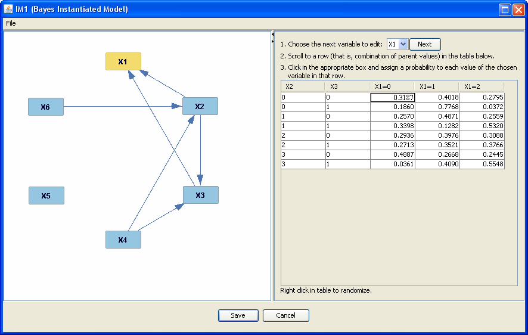When it is input into the approximate updater, the following window results:
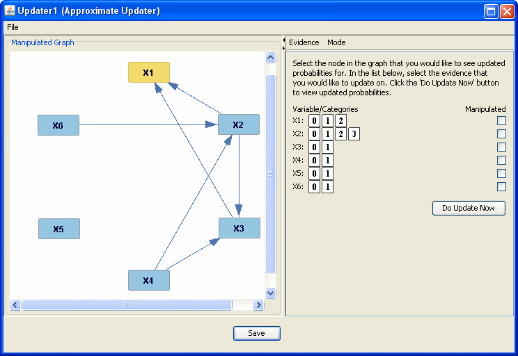If we click “Do Update Now” now, without giving the updater any evidence, the right side of the screen changes to show us the marginal probabilities of the variables.
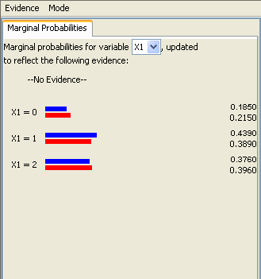The blue lines, and the values listed across from them, indicate the probability that the variable takes on the given value in the input instantiated model. The red lines indicate the probability that the variable takes on the given value, given the evidence we’ve added to the updater.
Since we have added no evidence to the updater, the red and blue lines are very similar in length. To view the marginal probabilities for a variable, either click on the variable in the graph to the left, or choose it from the scrolling menu at the top of the window. At the moment, they should all be very close to the marginal probabilities taken from the instantiated model.
Now, we’ll return to the original window. We can do so by clicking “Edit Evidence” under the Evidence tab. Suppose we know that X1 takes on the value 1 in our model, or suppose we merely want to see how X1 taking that value affects the values of the other variables. We can click on the box that says “1” next to X1. When we click “Do Update Now,” we again get a list of the marginal probabilities for X1.
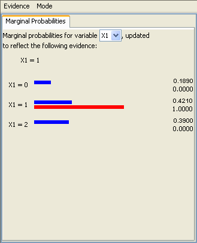Now that we have added evidence, the “red line” marginal probabilities have changed; for X1, the probability that X1=1 is 1, because we’ve told Tetrad that that is the case. Likewise, the probabilities that X1=0 and X1=2 are both 0.
Now, let’s look at the updated marginal probabilities for X2, a parent of X1.
 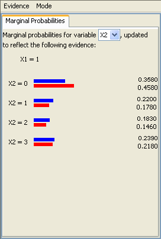
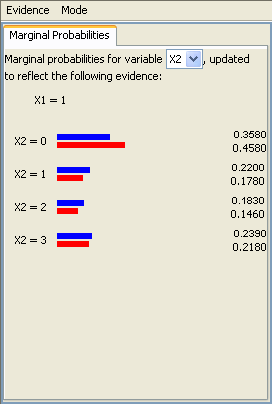
The first image is the marginal probabilities before we added the evidence that X1=1. The second image is the updated marginal probabilities. They have changed; in particular, it has become much more likely that X2=0.
Under the Mode tab, we can change the type of information that the updater box gives us. The mode we have been using so far is “Marginals Only (Multiple Variables).” We can switch the mode to “In-Depth Information (Single Variable).” Under this mode, when we perform the update, we receive more information (such as log odds and joints, when supported; joint probabilities are not supported by the approximate updater), but only about the variable which was selected in the graph when we performed the update. To view information about a different variable, we must re-edit the evidence with that variable selected.
If the variable can take one of several values, or if we know the values of more than one variable, we can select multiple values by pressing and holding the Shift key and then making our selections. For instance, in the model above, suppose that we know that X1 can be 1 or 2, but not 0. We can hold the Shift key and select the boxes for 1 and 2, and when we click “Do Update Now,” the marginal probabilities for X2 look like this:
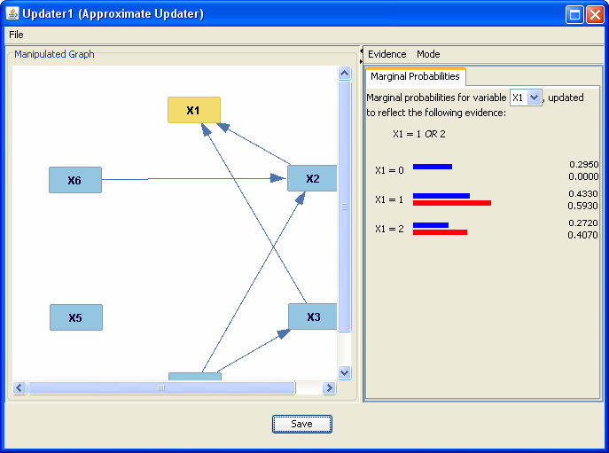Since X1 must be 1 or 2, the updated probability that it is 0 is now 0. The marginal probabilities of X2 also change:
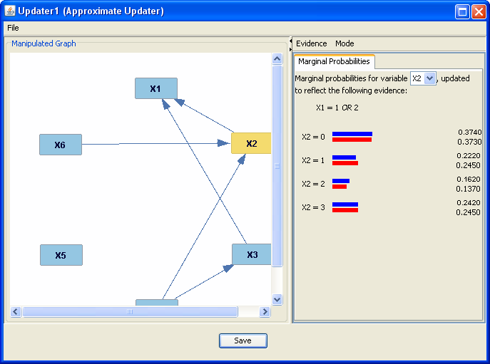The updated marginal probabilities are much closer to their original values than they were when we knew that X1 was 1.
Finally, if we are arbitrarily setting the value of a variable—that is, the values of its parents have no effect on its value—we can check the “Manipulated” box next to it while we are we editing evidence, and the update will reflect this information.
Note that multiple values cannot be selected for evidence for SEM models.
Row Summing Exact Updater
The row summing exact updater is a slower but more accurate updater than the approximate updater. The complexity of the algorithm depends on the number of variables and the number of categories each variable has. It creates a full exact conditional probability table and updates from that. Its window functions exactly as the approximate updater does, with two exceptions: in “Multiple Variables” mode, you can see conditional as well as marginal probabilities, and in “Single Variable” mode, you can see joint values.
Junction Tree Exact Updater
The Junction Tree exact updater is another exact learning algorithm. Its window functions exactly as the approximate updater down, with one exception: in “Multiple Variables” mode, you can see conditional as well as marginal probabilities.
SEM Updater
The SEM updater does not deal with marginal probabilities; instead, it estimates means.
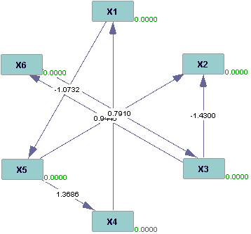When it is input to the SEM updater, the following window results:
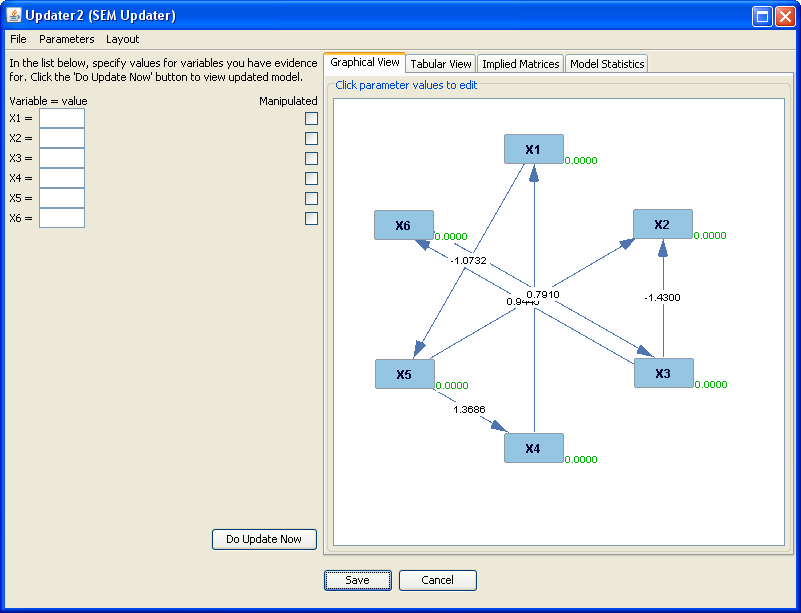Suppose we know that the mean of X1 is .5. When we enter that value into the text box on the left and click “Do Update Now,” the model on the right updates to reflect that mean, changing the means of both X1 and several other variables. In the new model, the means of X2, X4, and X5 will all have changed. If we click the “Manipulated” check box as well, it means that we have arbitrarily set the mean of X1 to .5, and that the value of its parent variable, X4, has no effect on it. The graph, as well as the updated means, changes to reflect this.
The rest of the window has the same functionality as a SEM instantiated model window, except as noted above.
Knowledge Box
The knowledge box takes as input a graph or a data set and imposes additional constraints onto it, to aid with search.
Possible Parent Boxes of the Knowledge Box:
- A graph box
- A parametric model box
- An instantiated model box
- A data box
- A simulation box
- A search box
- Another knowledge box
Possible Child Boxes of the Knowledge Box:
- A search box
- Another knowledge box
Tiers and Edges
The tiers and edges option allows you to sort variables into groupings that can or cannot affect each other. It also allows you to manually add forbidden and required edges one at a time.
Tiers
The tiers tab for a graph with ten variables looks like this:
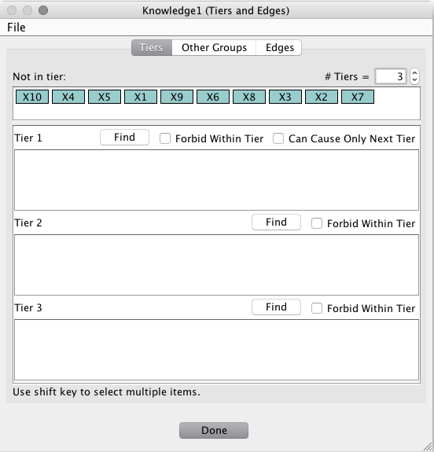Tiers separate your variables into a timeline. Variables in higher-numbered tiers occur later than variables in lower-numbered tiers, which gives Tetrad information about causation. For example, a variable in Tier 3 could not possibly be a cause of a variable in Tier 1.
To place a variable in a tier, click on the variable in the “Not in tier” box, and then click on the box of the tier. If you check the “Forbid Within Tier” box for a tier, variables in that tier will not be allowed to be causes of each other. To increase or decrease the number of tiers, use the scrolling box in the upper right corner of the window.
You can quickly search, select and place variables in a tier using the Find button associated with each tier. Enter a search string into the Find dialogue box using asterisks as wildcard indicators. E.g., "X1*" would find and select variables X1 and X10.
You can also limit the search such that edges from one tier only are added to the next immediate tier e.g., if Tier 1 "Can cause only next tier" is checked then edges from variables in Tier 1 to variables in Tier 3 are forbidden.
Handling of Interventional Variables in Tiers
If you have annotated your variables with interventional status and interventional value tags using a metadata JSON file (see Data Box section) the Tiers and Edges panel will automatically place these variables in Tier 1. If you have information about the effects of the intervention variables you can use the groups tab to indicate this.
Groups
The groups tab for a graph with four variables looks like this:
In the groups tab, you can specify certain groups of variables which are forbidden or required to cause other groups of variables. To add a variable to the “cause” section of a group, click on the variable in the box at the top, and then click on the box to the left of the group’s arrow. To add a variable to the “effect” section of a group, click on the variable in the box at the top, and then click on the box to the right of the group’s arrow. You can add a group by clicking on one of the buttons at the top of the window, and remove one by clicking the “remove” button above the group’s boxes.
Edges
The edges tab for a graph with four variables looks like this:
In the edges tab, you can require or forbid individual causal edges between variables. To add an edge, click the type of edge you’d like to create, and then click and drag from the “cause” variable to the “effect” variable.
You can also use this tab to see the effects of the knowledge you created in the other tabs by checking and unchecking the boxes at the bottom of the window. You can adjust the layout to mimic the layout of the source (by clicking “source layout”) or to see the variables in their timeline tiers (by clicking “knowledge layout”).
Forbidden Graph
If you use a graph as input to a knowledge box with the “Forbidden Graph” operation, the box will immediately add all edges in the parent graph as forbidden edges. It will otherwise work like a Tiers and Edges box.
Required Graph
If you use a graph as input to a knowledge box with the “Required Graph” operation, the box will immediately add all edges in the parent graph as required edges. It will otherwise work like a Tiers and Edges box.
Measurement Model
This option allows you to build clusters for a measurement model. When first opened, the window looks like this:
You can change the number of clusters using the text box in the upper right hand corner. To place a variable in a cluster, click and drag the box with its name into the cluster pane. To move multiple variables at once, shift- or command-click on the variables, and (without releasing the shift/command button or the mouse after the final click) drag. In the search boxes, these variables will be assumed to be children of a common latent cause.
Simulation Box
The simulation box takes a graph, parametric model, or instantiated model and uses it to simulate a data set.
Possible Parent Boxes of the Simulation Box
- A graph box
- A parametric model box
- An instantiated model box
- An estimator box
- A data box
- Another simulation box
- A search box
- An updater box
- A regression box
Possible Child Boxes of the Simulation Box
- A graph box
- A compare box
- A parametric model box
- An instantiated model box
- An estimator box
- A data box
- Another simulation box
- A search box
- A classify box
- A regression box
- A knowledge box
Using the Simulator Box
When you first open the simulation box, you will see some variation on this window:
The “True Graph” tab contains the graph from which data is simulated.
The Simulation Box with no Input
Because it has no input box to create constraints, a parentless simulation box offers the greatest freedom for setting the graph type, model type, and parameters of your simulated data. In particular, it is the only way that the simulation box will allow you to create a random graph or graphs within the box. (If you are simulating multiple data sets, and want to use a different random graph for each one, you can select “Yes” under “Yes if a different graph should be used for each run.”) You can choose the type of graph you want Tetrad to create from the “Type of Graph” drop-down list.
Random Forward DAG
This option creates a DAG by randomly adding forward edges (edges that do not point to a variable’s ancestors) one at a time. You can specify graph parameters such as number of variables, maximum and minimum degrees, and connectedness.
Erdos Renyi DAG
This option creates a DAG by randomly adding edges with a given edge probability. The graph is then oriented as a DAG by choosing a causal order.
Scale Free DAG
This option creates a DAG whose variable’s degrees obey a power law. You can specify graph parameters such as number of variables, alpha, beta, and delta values.
Cyclic, constructed from small loops
This option creates a cyclic graph. You can specify graph parameters such as number of variables, maximum and average degrees, and the probability of the graph containing at least one cycle.
It is very important when dealing with cyclic models to realize that the potential exists always to instantiate these models with coefficients that are too large. Always, to keep simulations from "exploding" ("diverging"--i.e., having simulation values that tend to infinity over time), it is necessary to make sure that coefficient values are relatively small, usually less than 1. One can tell whether a model will produce simulations that diverge in value by testing the eigenvalues of the covariance matrix of the data. If any of these eigenvalues are greater than 1, the potential exists for the simulation to "explode" toward infinity over time.
Random One Factor MIM
This option creates a one-factor multiple indicator model. You can specify graph parameters such as number of latent nodes, number of measurements per latent, and number of impure edges.
Random Two Factor MIM
This option creates a two-factor multiple indicator model. You can specify graph parameters such as number of latent nodes, number of measurements per latent, and number of impure edges.
In addition to the graph type, you can also specify the type of model you would like Tetrad to simulate.
Bayes net
Simulates a Bayes instantiated model. You can specify model parameters including maximum and minimum number of categories for each variable.
Structural Equation Model
Simulates a SEM instantiated model. You can specify model parameters including coefficient, variance, and covariance ranges.
Linear Fisher Model
Simulates data using a linear Markov 1 DBN without concurrent edges. The Fisher model suggests that shocks should be applied at intervals and the time series be allowed to move to convergence between shocks. This simulation has many parameters that can be adjusted, as indicated in the interface. The ones that require some explanation are as follows.
- Low end of coefficient range, high end of coefficient range, low end of variance range, high end of variance range. Each variable is a linear function of the parents of the variable (in the previous time lag) plus Gaussian noise. The coefficients are drawn randomly from U(a, b) where a is the low end of the coefficient range and b is the high end of the coefficient range. Here, a < b. The Gaussian noise is drawn uniformly from U(c, d), where c is the low end of the variance range and d is the high end of the variance range. Here, c < d.
- Yes, if negative values should be considered. If no, only positive values will be recorded. This should not be used for large numbers of variables, since it is more difficult to find cases with all positive values when the number of variables is large.
- Percentage of discrete variables. The model generates continuous data, but some or all of the variables may be discretized at random. The user needs to indicate the percentage of variables (randomly chosen that one wishes to have discretized. The default is zero—i.e., all continuous variables.
- Number of categories of discrete variables. For the variables that are discretized, the number of categories to use to discretize each of these variables.
- Sample size. The number of records to be simulated.
- Interval between shocks. The number of time steps between shocks in the model.
- Interval between data recordings. The data are recorded every so many steps. If one wishes to allow to completely converge between steps (i.e., produce equilibrium data), set this interval to some large number like 20 and set the interval between shocks likewise to 20 Other values can be used, however.
- Epsilon for convergence. Even if you set the interval between data recordings to a large number, you can specify an epsilon such that if all values of variables differ from their values one time step back by less than epsilon, the series will be taken to have converged, and the remaining steps between data recordings will be skipped, the data point being recorded at convergence.
Lee & Hastie
This is a model for simulating mixed data (data with both continuous and discrete variables. The model is given in Lee J, Hastie T. 2013, Structure Learning of Mixed Graphical Models, Journal of Machine Learning Research 31: 388-396. Here, mixtures of continuous and discrete variables are treated as log-linear.
- Percentage of discrete variables. The model generates continuous data, but some or all of the variables may be discretized at random. The user needs to indicate the percentage of variables (randomly chosen that one wishes to have discretized. The default is zero—i.e., all continuous variables.
- Number of categories of discrete variables. For the variables that are discretized, the number of categories to use to discretize each of these variables.
- Sample size. The number of records to be simulated.
Time Series
This is a special simulation for representing time series. Concurrent edges are allowed. This can take a Time Series Graph as input, in which variables in the current lag are written as functions of the parents in the current and previous lags.
- Sample size. The number of records to be simulated.
Functional–Causal Simulator (Zhang 2015)
Generates data from an additive, potentially nonlinear functional-causal
model (Zhang 2015).
Each variable Xi is produced as
Xi := fi(PAi) + Ui,
where Ui are mutually independent noise terms.
- GUI: Simulate ▸ Functional-Causal
- CLI:
-sim-func -n {samples} -dag {graphSpec} - Outputs: continuous data set; ground-truth DAG.
Additive-Noise Simulator (Peters 2014)
Implements the linear/non-linear additive-noise model used by Peters et al., 2014. Noise variance is user-selectable; functions are sampled from Gaussian processes.
Post-Non-Linear Simulator (Zhang & Hyvärinen 2009)
Samples data from the PNL causal model
X := g(f(PA) + U),
covering non-monotone g when required.
Causal-Perceptron Network (DJI)
Experimental simulator for deep causal generative networks (Dji internal research). Currently marked “beta”.
The Simulation Box with a Graph Input
If you input a graph, you will be able to simulate any kind of model, with any parameters. But the model will be constrained by the graph you have input (or the subgraph you choose in the “True Graph” tab.) Because of this, if you create a simulation box with a graph as a parent, you will not see the “Type of Graph” option.
The Simulation Box with a Parametric Model Input
At the time of writing, a simulation box with a parametric model input acts as though the PM’s underlying graph had been input into the box.
The Simulation Box with an Instantiated Model Input
If you input an instantiated model, your only options will be the sample size of your simulation and the number of data sets you want to simulate; Tetrad will simulate every one of them based on the parameters of the IM. The model will not be re-parameterized for each run of the simulation.
Search Box
The search box takes as input a data set (in either a data or simulation box) and optionally a knowledge box, and searches for causal explanations represented by directed graphs. The result of a search is not necessarily—and not usually—a unique graph, but an object such as a CPDAG that represents a set of graphs, usually a Markov Equivalence class. More alternatives can be found by varying the parameters of search algorithms.
Possible Parent Boxes of the Search Box
- A graph box
- A parametric model box
- An instantiated model box
- An estimator box
- A data box
- A simulation box
- Another search box
- A regression box
- A knowledge box
Possible Child Boxes of the Simulation Box
- A graph box
- A compare box
- A parametric model box
- A simulation box
- Another search box
- A knowledge box
Using the Search Box
For more information that in included about the search algorithms than is included in the text below, please see our Javadocs for the Search package.
Using the search box requires you to select an algorithm (optionally select a test/score), confirm/change search parameters and finally run the search.
The search box first asks what algorithm, statistical tests and/or scoring functions you would like to use in the search. The upper left panel allows you to filter for different types of search algorithms with the results of filtering appearing in the middle panel. Selecting a particular algorithm will update the algorithm description on the right panel.
Choosing the correct algorithm for your needs is an important consideration. Tetrad provides over 30 search algorithms (and more are added all the time) each of which makes different assumptions about the input data, uses different parameters, and produces different kinds of output. For instance, some algorithms produce Markov blankets or CPDAGs, and some produce full graphs; some algorithms work best with Gaussian or non-Gaussian data; some algorithms require an alpha value, some require a penalty discount, and some require both or neither. You can narrow down the list using the “Algorithm filter" panel, which allows you to limit the provided algorithms according to whichever factor is important to you.
Depending on the datatype used as input for the search (i.e., continuous, discrete, or mixed data) and algorithm selected, the lower left panel will display available statistical tests (i.e., tests of independence) and Bayesian scoring functions.
After selecting the algorithm and desired test/score, click on "Set parameters" which will allow you to confirm/change the parameters of the search.
After optionally changing any search parameters, click on "Run Search and Generate Graph" which will execute the search.
Notably there are some experimental algorithms available in this box. To see these, select File->Settings->Enable Experimental.
Regression Box
The regression box performs regression on variables in a data set, in an attempt to discover causal correlations between them. Both linear and regression are available.
Possible Parent Boxes of the Regression Box
- A data box
- A simulation box
Possible Child Boxes of the Instantiated Model Box:
- A graph box
- A compare box
- A parametric model box
- A data box
- A simulation box
- A search box
Multiple Linear Regression
Linear regression is performed upon continuous data sets. If you have a categorical data set upon which you would like to perform linear regression, you can make it continuous using the data manipulation box.
Take, for example, a data set with the following underlying causal structure:
When used as input to the linear regression box, the following window results:
To select a variable as the response variable, click on it in the leftmost box, and then click on the top right-pointing arrow. If you change your mind about which variable should be the response variable, simply click on another variable and click on the arrow again.
To select a variable as a predictor variable, click on it in the leftmost box, and then click on the second right-pointing arrow. To remove a predictor variable, click on it in the predictor box and then click on the left-pointing arrow.
Clicking “Sort Variables” rearranges the variables in the predictor box so that they follow the same order they did in the leftmost box. The alpha value in the lower left corner is a threshold for independence; the higher it is set, the less discerning Tetrad is when determining the independence of two variables.
When we click “Execute,” the results of the regression appear in the box to the right. For each predictor variable, Tetrad lists the standard error, t value, and p value, and whether its correlation with the response variable is significant.
The Output Graph tab contains a graphical model of the information contained in the Model tab. For the case in which X4 is the response variable and X1, X2, and X3 are the predictors, Tetrad finds that only X1 is significant, and the output graph looks like this:
Comparison to the true causal model shows that this correlation does exist, but that it runs in the opposite direction.
Logistic Regression
Logistic regression may be run on discrete, continuous, or mixed data sets; however, the response variable must be binary. In all other ways, the logistic regression box functions like the linear regression box.
Appendices
An Introduction to PAGs
Peter Spirtes
The output of the FCI algorithm [Spirtes, 2001] is a partial ancestral graph (PAG), which is a graphical object that represents a set of causal Bayesian networks (CBNs) that cannot be distinguished by the algorithm. Suppose we have a set of cases that were generated by random sampling from some CBN. Under the assumptions that FCI makes, in the large sample limit of the number of cases, the PAG returned by FCI is guaranteed to include the CBN that generated the data.
An example of a PAG is shown in Figure 2. This PAG represents the pair of CBNs in Figure 1a and 1b (where measured variables are in boxes and unmeasured variables are in ovals), as well as an infinite number of other CBNs that may have an arbitrarily large set of unmeasured confounders. Despite the fact that there are important differences between the CBNs in Figure 1a and 1b (e.g., there is an unmeasured confounder of X1 and X2 in Figure 1 b but not in Figure 1a), they share a number of important features in common (e.g., in both CBNs, X2 is a direct cause of X6, there is no unmeasured confounder of X2 and X6, and X6 is not a cause of X2). It can be shown that every CBN that a PAG represents shares certain features in common. The features that all CBNs represented by a PAG share in common can be read off of the output PAG according to the rules described next.
There are 4 kinds of edges that occur in a PAG: A -> B, A o-> B, A o–o B, and A <-> B. The edges indicate what the CBNs represented by the PAG have in common. A description of the meaning of each edge in a PAG is given in Table A1.
Table A1: Types of edges in a PAG.
| Edge type | Relationships that are present | Relationships that are absent |
|---|---|---|
| A --> B | A is a cause of B. It may be a direct or indirect because that may include other measured variables. Also, there may be an unmeasured confounder of A and B. | B is not a cause of A. |
| A <-> B | There is an unmeasured variable (call it L) that is a cause of A and B. There may be measured variables along the causal pathway from L to A or from L to B. | A is not a cause of B. B is not a cause of A. |
| A o-> B | Either A is a cause of B, or there is an unmeasured variable that is a cause of A and B, or both. | B is not a cause of A. |
| A o–o B | Exactly one of the following holds: (a) A is a cause of B, or (b) B is a cause of A, or (c) there is an unmeasured variable that is a cause of A and B, or (d) both a and c, or (e) both b and c. |
Table A1 is sufficient to understand the basic meaning of edge types in PAGs. Nonetheless, it can be helpful to know the following additional perspective on the information encoded by PAGs. Each edge has two endpoints, one on the A side, and one on the B side. For example A --> B has a tail at the A end, and an arrowhead at the B end. Altogether, there are three kinds of edge endpoints: a tail "–", an arrowhead ">", and a "o." Note that some kinds of combinations of endpoints never occur; for example, A o– B never occurs. As a mnemonic device, the basic meaning of each kind of edge can be derived from three simple rules that explain what the meaning of each kind of endpoint is. A tail "–" at the A end of an edge between A and B means "A is a cause of B"; an arrowhead ">" at the A end of an edge between A and B means "A is not a cause of B"; and a circle "o" at the A end of an edge between A and B means "can't tell whether A is a cause of B". For example A --> B means that A is a cause of B, and that B is not a cause of A in all the CBNs represented by the PAG.
The PAG in Figure 2 shows examples of each type of edge, and the CBNs. Figure 1. show some examples of what kinds of CBNs can be represented by that PAG.


Figure 1. Two CBNs that FCI (as well as FCI+, GFCI, and RFCI) cannot distinguish.
Figure 2. The PAG that represents the CBN s in both Figures 1a and 1b.
Arc Specializations in PAGs
This section describes two types of edge specializations that provide additional information about the nature of an arc in a PAG.
One edge specialization is colored green and is called definitely visible. In a PAG P without selection bias, a green (definitely visible) arc from A to B denotes that A and B do not have a latent confounder. If an arc is not definitely visible (represented as black) then A and B may have a latent confounder.
Another edge specialization is shown as bold and is called definitely direct. In a PAG P without selection bias, a bold (definitely direct) arc from A to B denotes that A is a direct cause of B, relative to the other measured variables. If an arc is not definitely direct (represented as not bolded) then A may not be a direct cause of B, in which case there may be one or more measured variables on every causal path from A to B.
In the following examples, the DAG representing a causal process is on the left, and the corresponding PAG is on the right. All variables are observed except for latent variable L.
Example of an edge C ➔ D that is definitely visible (green) and definitely direct (bold):
Example of an edge (C ➔ E) that is definitely visible (green) and not definitely direct (not bold):
Example of an edge (F ➔ E) that is not definitely visible (black) and not definitely direct (not bold):

It is conjectured that it is not possible for an edge to be definitely direct (bold) and not definitely visible (black).
Solving Out of Memory Errors
By default, Java will allocate the smaller option of 1/4 system memory or 1GB to the Java virtual machine (JVM). If you run out of memory (heap memory space) running your analyses you should increase the memory allocated to the JVM with the following switch '-XmxXXG' where XX is the number of gigabytes of ram you allow the JVM to utilize. To run Tetrad with more memory you need to start it from the command line or terminal. For example to allocate 8 gigabytes of ram you would add -Xmx8G immediately after the java command e.g., java -Xmx8G -jar tetrad-gui.jar.
Glossary of Terms
Adjacent
Two vertices in a graph are adjacent if there is a directed, or undirected, or double-headed edge between them.
Degree
The total number of edges directed both into and out of a vertex.
Indegree
The number of edges directed into a vertex.
Markov Blanket
In a variable set V, with joint probability Pr, the Markov Blanket of a variable X in V is the smallest subset M of V \ {X} such that X II V \ M | M. In a DAG model, the Markov Blanket of X is the union of the set of direct causes (parents) of X, the set of direct effects (children) of X, and the set of direct causes of direct effects of X.
Markov Equivalent Graphs
Two directed acyclic graphs (DAGS) are Markov Equivalent if they have the same adjacencies and for every triple X – Y – Z of adjacent vertices, if X and Z are not adjacent, X -> Y <- Z in both graphs or in neither graph.
Meek Orientation Rules
Rules for finding all directions of edges implied by a CPDAG, consistent with any specified “knowledge” constraints on directions. See https://arxiv.org/pdf/1302. 4972.pdf
Mixed Ancestral Graph (MAG)
An acyclic graph with directed and undirected edges. Directed edges have the same interpretation as in DAGs. Undirected edges represent common causes. See Richardson, T. (2003). Markov properties for acyclic directed mixed graphs. Scandinavian Journal of Statistics, 30(1), 145-157.
Multiple Indicator Model
A graphical model in which unmeasured variables each have multiple measured effects. There may be directed edges between unmeasured variables, but no directed edges from measured variables to unmeasured variables are allowed.
Outdegree
The number of edges directed out of a vertex.
Partial Ancestral Graph (PAG)
See PAG description in this manual.
CPDAG
A graphical representation of a Markov Equivalence Class or Classes, having both directed and undirected edges, with an undirected edge indicating that for each possible direction of the edge, there is a graph in the class or classes having that edge direction.
Scale Free Graph
A network in which the frequency of nodes with degree k obeys a power law--the relation between log of degree and log of frequency is roughly linear. See https://cs.brynmawr.edu/Courses/cs380/ spring2013/section02/slides/10_ScaleFreeNetworks.pdf.
Trek
A trek between X and Y is a directed path from X to Y or from Y to X, or two directed paths from a third variable Z into X and Y that do not intersect except at Z.